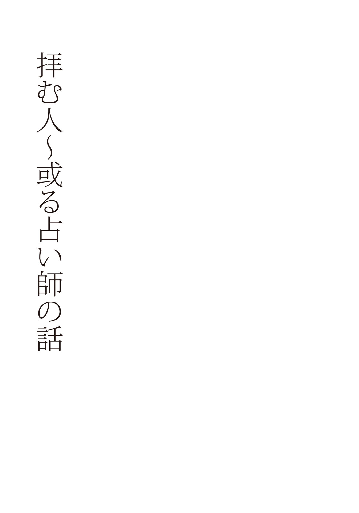
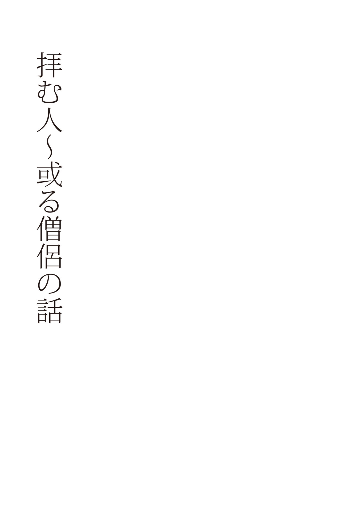
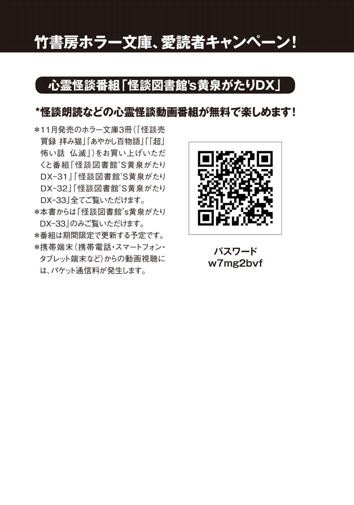

| 「超」怖い話 仏滅 「超」怖い話シリーズ (竹書房文庫) | |
| 久田樹生 | |
| 竹書房 (2016) | |
この作品は縦書きでレイアウトされています。
また、ご覧になる機種により、表示の差異が認められることがあります。
一部の漢字が簡略字で表示されていることがあります。
※本書に登場する人物名は、様々な事情を考慮してすべて仮名にしてあります。また、作中に登場する体験者の記憶と体験当時の世相を鑑み、極力当時の様相を再現するよう心がけています。現代においては若干耳慣れない言葉・表記が登場する場合がありますが、これらは差別・侮蔑を意図する考えに基づくものではありません。
ドローイング 担木目鱈
拝む人～或る拝まない人の話
皆様は、お経 や祝詞 を直接耳にしたことはございますか？
極個人的なことを言えば、お経や祝詞は美しい音楽の調べのように届きます。
荘厳な響きを伴って、身体の中心が揺らされるような感覚です。
単純な言葉で言えば、感動を与えられます。
いつまでも聞いていたいと思ってしまうほどに。
しかし、私自身はお経も祝詞も唱えられません。
般 若 心 経 や念仏すら口にしませんし、寺社へ出向いても手を合わせるくらいです。
これでも〈拝むこと〉に相違ないとは思うのですが、少し疑問が浮かびます。
──拝むって、なんだ？
例えば、仏様へ手を合わせているとき、俗人は自分のことばかり祈りがちです。
雑誌などのメディアは寺社をパワースポットや〈願いを叶えてくれる〉場所として紹介しているから、そうなってしまうのも仕方ない話かもしれません。
では、僧侶や他の〈きちんとした人たち〉の拝むとはなんでしょうか？
イメージだと、辛い修行や勤行などが浮かびますが、それはただ外から見ただけの姿でしかありません。
疑問を解きたくて書籍やインターネット等を当たってみたけれども、結局それは生の声ではないし、中には面白いほど訳の分からないものすらありました。まさに禅問答。
このような観念的な事象は、詳しい研究者や専門職の講義を受けたって分かるわけがありません。知識を与えられて〈分かったフリ〉ができるようになるだけです。
自分が知りたい、理解したいと思うところとは全く違う方向を向いています。
いや、多分きっと、何を教えられても私には何も分かりません。
職業柄、神社仏閣を訪問することは多いですが、ただそれだけです。
加えて凡夫の俗物ですから、脳の片隅にも残らないでしょう。
でも、きちんと〈拝んでいる人々〉の感じていることを聞くことはできます。
そして表層をなぞって書くこともできます。
できうる限り、余計なものを除いた形で。
本書『「超」怖い話 仏滅』は二人の〈拝む人〉から伺った話を納めました。
なお、内容的にはかなり誤魔化した部分が多々あります。
プライバシーの保護という観点もありますし、特殊な立場（占い師、僧侶など）の人物が入れ替わり立ち替わり登場するので、専門用語等含めて変更しました。
「これは○○だと違うじゃないか！」という部分が散見されますがご容赦下さい。
まずは、ご一読を。
筆者

占い師という職業がある。
手相、占星術、タロットカードなど、種類は数多い。
細かく調べていけば、膨大な占いが出てくるだろう。
しかし、占い師という人間に対して、わたしたちはどのような印象を持つだろうか。
また、占い師に占って貰った経験のある人はどれくらいいるのだろうか。
周囲に話を伺えば「占いをして貰った事がある」「当たる占い師は凄い」「よく見て貰う占い師さんがいる」など、割と沢山の人が答えてくれた。
占って貰う内容も「今の運勢はどうですか？」「これから私はどうしたらよいのでしょう？」という事が大半を占めているようだ。
そして、運勢がどうだ、あなたはこういう人間だと指摘されたとて、最終的には後者の「どうしたらよい？」という進む先を選択するための質問へ移る。
普通なら参考にする程度だろうが、中にはその回答を金科玉条のように扱い、全て占い師の言う通りに行動してしまう人もいる。
ある占い師が〈占い師は話術に長けた人間である〉と教えてくれた。
占い師は相談者の話を聞くだけではない。話をしなくてはならないこともある。その際、相手の耳に言葉だけを届けるだけでは不十分で、内容そのものを理解して貰わなければならない。だから、話術に長けていなければならないのだ、と。
しかしこの技術は決して悪用するためのものではない。プロだから必要なのだ。
〈占い依存〉にさせることは詐欺や洗脳に近いもので、根本的なスキルが違う。
依存させるようにコントロールにするのはまともな占い師ではない。歪んでいる。
占い師の〈瀧 本 のりこ〉さんは言う。
「占い師の仕事は、クライアントさんの背中をポンと押して、自分の足で立って歩いて行って貰う手助けをすること」
彼女曰く、占い師なんて本来要らないもの。
問題を抱える人がいないことが、素晴らしいことなのだから。
占いが必要ないなら、それが一番いい。
だがそうもいかない世の中だから、占い師としてはクライアントさんが「問題が解決しない」と繰り返し来るような事態を避けるべく、最大限努力をする。リピーターが多いと言うことは、ある意味占い師の仕事が全く役に立っていないことになり、即ち自分の腕が悪いという証明でしかない。
逆にリピーターが「もう大丈夫です！ すっかり元気になりました！」と喜び、相談事が来なくなる方が嬉しい。
「それって、相手が良い方向へ歩いて行っている、って証拠でしょう？」
瀧本さんは神戸在住、二十代後半の女性である。
下の名前は年の割に古風であるが、自身は気に入っている。
ごく普通の、その辺を歩いているＯＬさんたちと一切違いはない。
といいつつ、やはりどこか周りから良い意味で〈浮き立っている〉ようにも思える。
おっとりしているような雰囲気を漂わせているが、どこかしゃんとした印象だ。
背筋のせいか、それとも喋る内容のせいか。
言葉は標準語ベースで、イントネーションに関西の抑揚が含まれていた。
占いはタロットカードである。
また、寺社を巡っては手を合わせ、拝むことが多いという。
仕事柄、相談者などの問題で〈ヤバいもの〉も扱うからである。
「何か困ったなぁと思ったら、御神仏に丸投げして、あとは流れに任せる」
とはいえ、神仏が全て何かをしてくれるとも思っていない。
本人が自分の足で立つことが大事だと語る。
また生命力が弱いと、何かと悪い状態へ陥りやすい。
「よく寝て、食べて、心から〈幸せ〉と笑えることが大事。それには感情を殺さないで出すこと。例えそれが悲しいとか、辛いなどのネガティブな感情でも吐き出さないと。自分を押し殺すと感情が溜まっていく一方で、心身の滞りになって生命力が落ちる」
簡単に見えて、これらが行えなくなっている人が多いのが現代。
あなたはどうだろうか？ できますか？
梵字とブレスレット
瀧本さんのクライアントには〈占いジプシー〉がいる。
ジプシー。流浪の民などを意味する言葉だ。
占い師を転々と訪ね歩いては鑑定をして貰うことが好きな人たちを指して、彼女はそう表現する。
占い師をしているとたまに出会うタイプである。
この占いジプシーに山留さんという女性がいた。
年齢は瀧本さんより年上で、三十代前半である。
ジプシーと言っても変わった格好や雰囲気を持っているわけではなく、そこらを歩く女性達と何ら変わりはない。
ただし、少々ネガティブな気質ではあった。
だからこそ占いに頼る。そして、瀧本さんに鑑定やパワーストーンのブレスレット製作を頼むのだ。
正直な話、これだけ繰り返し何度も来るのは問題である。
幾ら占いをして助言をしても、全く効果がないということになるからだ。
占い師としてあまりよいことではない。
また、山留さんはやたらとブレスレットも壊す。
つい先日もターコイズを加えたブレスレットが切れた。
布団に放り投げたとき、ぷつりと紐が切れてバラバラになったという。
拾い集めてみれば、ターコイズだけが真っ二つになっていた。
ターコイズは〈ネガティブな気持ちを退け、勇気をもたらす〉意味を持つ。
山留さんの気質に合わせたのだがピンポイントで割れた。
不穏でしかない。
とはいえ壊れてしまったものは仕方がないだろう。
新しいブレスレットを依頼されたので、作って渡した。
彼女が前向きになれるよう、サンストーンとラブラドライトを入れた。
（でも、他の人ではそんなことないんだけどなぁ）
山留さんを見ながら、そんなことを瀧本さんはいつも思う。
多くの人は多くても三回ほどの占いで解決するし、ブレスレットも長持ちする。
この山留さんだけが繰り返しやって来るし、ブレスレットも頻繁に壊す。
そもそも自分がブレスレットを組むときは、高いグレードの石を用いる。
簡単に砕けたりはしないし、それだけ効果も高い。
大体、何かあったとしてもまずゴム紐から切れるのが普通だ。
石にダメージが与えられるのは、余程の理由があるときだけだ。
それなのに、これだ。
本人になんらかの問題があるのだろうかと、悩みの種でもあった。
新しいブレスレットを組んでから間もなく、また山留さんがやって来た。
相談があるらしい。
雑談を交わす中、ふとこんなことを言い出す。
「そういえば、面白い人を紹介して貰って」
聞けば、僧侶と知己を得たという。
元々は山留さんの所へ来る、保険の営業からの紹介である。
その営業の中年女性も何かのきっかけでその僧侶と知り合った。
一体、どのようなお坊さんなのか、訊ねてみた。
「印鑑を彫ってくれるんだって」
その僧侶は客の依頼で印章を彫ることを仕事としている。
作られる印章は漢字やひらがな、カタカナではない。
梵字、である。
梵字とは梵語を記すもので、古代インドのサンスクリット文字である。
密教における種子（仏尊を象徴する文字）を記すときにも用いられる。
僧侶は〈開運梵字印鑑〉的な触れ込みで印章を売っていた。
相手の願いを聞き、それに合わせた梵字を使うようだ。
曰く、経営者や芸能人からも求められて彫ったことがあると自慢げだった。
彼はどこかの寺へ入っているわけではなく、個人の家でそれを行っている。
僧籍は持っているようであったが、宗派などは不明だった。
壮年を過ぎた、どちらかと言えば初老に近い年齢で、どことなく厳しい顔をしている。
会話をしていても優しさのようなものは一切なかった。
どことなく厭な感じもあったようだ。
聞けば聞くほど真っ当な僧侶である印象はない。
「で、その梵字印鑑を作らないかって言われているの。でも、どうかなぁって」
効果はあると保険の営業から聞いた。
しかし、未だ悩んでいる。本当に作った方がよいのか、どうか。
占いジプシーである彼女にしては慎重さを感じさせる。
訳を訊けば、難しい顔になった。
「それなの。実はちょっと気になることがあって。だから、二の足を踏んでいて」
彼女は一枚の名刺を取り出した。
名前の部分を見ると、どうも僧侶風の漢字が使われている。
見ていると何故か気持ちが悪い。
「これは？」
「うん。例のお坊さんの名刺。梵字印鑑の」
どうしてこの名刺が不快に感じるのだろうか。
例えるなら、何か見られている、探りを入れられていると言えばよいか。
それも何かあればおかしなことを起こしそうな〈仕込み〉があるとすら思える。
黙ったままでいると山留さんは名刺を指してこんなことを教えてくれた。
「この名刺もらってから、いいことないし、変なことが沢山起きているんだよね」
まず、数々の不運に見舞われ始めた。
そして自宅の誰も居ない廊下で、人の気配がする。
部屋から出て確かめるが誰も居ない。気配も消える。
また、ドアがひとりでに開いていくこともあった。
誰かが居るのか目を凝らしても、扉の向こうに人の姿はなかった。
その他諸々の異変が周囲で起こるのだ。
だから、印鑑を作るかどうしようかと迷っているのだった。
（ははあ、原因はきっとその僧侶のせいだろう）
因果関係は明白だ。だいたい、その僧侶も良いイメージがない人物である。
瀧本さんは山留さんに助言した。
まず、印鑑を作るのを止めること。
加えて、その僧侶に関するものを全て焼き捨てることだ。
名刺は及ばず、印鑑などのパンフレットなどがあればそれも一緒にと指定する。
また、印鑑は作らない件を明確に相手に述べ、断ることを約束させた。
完全に関係を切らせるためであった。
山留さんは納得して帰って行く。
が、どうしてこんな状態になっても彼女は印鑑を作るか作らないか悩んだのだろう。
名刺を貰ってからおかしなことが、と自分で気付いているのに。
それを含めて、僧侶が何かやっていたのかもしれなかった。
が、それから後、再び山留さんがやって来た。
「ブレスレット、また壊れちゃった」
例の僧侶の印鑑を断わらせているときだった。
彼女は何の気なしにブレスレットを外し、傍にあった座布団へ置いた。
その途端、音を立てて石が飛び散った。
見れば紐が切れて完全にバラバラになっている。
ゴム紐の劣化とは考えられない。
つい最近、一ヶ月ほど前に作ったばかりの魔除けのブレスレットであるのだから。
確かめたら、サンストーンとラブラドライトだけが粉々に砕け散っていたようだ。
（あー、これは根が深いなぁ......）
未だ例の梵字印鑑の僧侶が何か関係しているのだろう。
名刺などを燃やさせ、断らせても未だ彼女に執着しているのか。
新たにブレスレットをお願いされたので、改めて組み直し、手渡す。
これで大丈夫だろうかと心配していたが、その不安は的中した。
またもやブレスレットはバラバラになったのだ。
山留さんが普通に自宅の階段を上っているとき、何の前触れもなく切れた。
慌てて拾い集めてみれば、明らかに石が足りない。
どこかへ落ちているはずだと幾ら探しても見つからない。
幾らなんでも自宅の階段周辺である。全く出てこないのはおかしい。
まるで忽然と空中にでも消え失せてしまったようだった。
残った石にも壊れた物が多数ある。
サンストーンとラブラドライト、インカローズ、フローライトは粉々に。
ルビーに至っては変形し、歪な形状になっていた。
ただし、それからは特に問題はないようだ。
僧侶とも完全に切れ、異変も起こらなくなった。
鑑定依頼もブレスレット製作も必要がなくなり、山留さんは平穏に過ごしているらしい。
瀧本さんはほっと胸を撫で下ろした。
しかし、その梵字の印鑑を作る僧侶を紹介した保険の営業には何もなかったのだろうか。
瀧本さんはそこまで確認はしていない。
ただし、営業は山留さんにこんなことを言っていたようだ。
「仕事が上手くいくように梵字の印鑑を作って貰ってから、営業成績が伸びた」
だとしたら、効果があるということになる。
だが、それも考え物だと瀧本さんは教えてくれた。
営業成績が伸びた理由は、どうも「営業先の人間に不幸があったために、保険の重要性を感じ、契約する」パターンが多かった。
梵字印鑑を作ってからそれは顕著だったのである。
逆説的に捉えれば、保険の営業が関わった相手が不幸せになったからこそ、保険が売れた、とも考えられる。
要するに〈周りを不幸にして、自分だけ利益を得ている〉状態。
はたしてそれが本当に開運だろうか。
だから、あれは真っ当な事をしているわけじゃない、そう瀧本さんは顔をしかめた。
どーも
瀧本さんが妹と温泉へ出かけたときのことだ。
休日、思い立っての行動で、午後四時過ぎに家を出た。
公共機関などを使うのは面倒なので、車だ。
途中、ある長いトンネルを抜けることになった。
ここが温泉への最短ルートで、何度か使ったことがある。
夕刻、トンネル入り口に差し掛かった。
隣を見れば、妹は居眠りを始めていた。
時計は午後五時を指している。ここからなら大体三十分程度で着くだろう。
──が。
走っても走ってもトンネルを抜けない。
途中途中に出てくる作業用通路入り口を移動距離の目印にするが、どれも似たり寄ったりでどうにも役に立たない。
それどころか繰り返し同じ作業通路入り口が出てくる。堂々巡りなのか。
すでに時刻は六時を回った。
一時間掛けても、まだ出口は見えない。そして対向車も全くなかった。
直進の道しかなく、車が侵入できる脇道は存在していない。だから、迷うはずもない。
どうもおかしすぎる。いつもならもう温泉について湯船に浸かっている頃だ。
何かが起こっている。緊張が走り、ハンドルを握る手が汗ばんだ。
（妹を起こしてはいけない）
こんな状態だ。何をどう言えばいいのか。
事故を起こしたくないこともあり、前だけに集中してアクセルを踏んだ。
どれくらい時間が過ぎただろうか。
向こう側に黒いかまぼこ形をした出口が見えた。
これ幸いと速度を上げたとき、妹が起きた。
「......まだ、トンネル？ ......えー!? 」
声を上げる。
「なんで？ 家出たの、四時くらいだったよね!? 」
時計を見たのだろう。自分も目をやれば、午後八時過ぎの数字が表示されていた。
三時間以上もトンネルの中を彷徨っていることになる。
まさか車の時計が狂っているのだろうか。
そんな事を考えながらトンネルから出れば、すでに辺りは真っ暗だ。
改めて妹に調べさせる。携帯の時刻も午後八時を過ぎていた。
二時間もあれば着く場所に、四時間以上掛けても辿り着けていなかった。
結局、温泉に着いたのは閉まる寸前であった。
トンネルが恐ろしいほど長くなっていたようだとしか思えない。
妹は、信じられないを連呼していた。
◆
実はこのトンネル、俗に言う〈お化けトンネル〉である。
普段は少し長いだけであるが、時にはおかしなことが起こった。
例えば、瀧本さんがひとりでトンネルを走っていたときだ。
用事があって、どうしてもここを抜けなくてはならなかった。
大体、半分くらい来たときだろうか。
進行方向の路上、その真ん中に何かが落ちていた。
照明に照らされているが、茶色っぽいように感じる。
ティッシュボックス程度の大きさで、向かって右から左に動いていた。
アスファルトの上をずるずる這うような雰囲気だ。
近づくにつれ、それに手足が生えていることが確認できる。
茶色い色をした四角い身体は、既知の動物などとはやはり違う。体つきからして、似ているものを思いつけない。
手足のつき具合や雰囲気から言えば、腹ばいで進んでいる。
それが左側の端へ着いたとき、丁度すれ違う形となった。
通り過ぎる瞬間（あのマスコットだ）と思った。
某公共放送局のマスコットキャラクターだ。
確認したい。
少し前に進んだところで停車し、後続車が来ていないことを確認してバックした。
だが、すでに茶色い何かは姿を消していた。
瀧本さん曰く。
「あれは妖精の一種だと思う」
理由はよく分からないが、きっとそうだ、動物なら消えるはずがない。
とにかくおかしなものだった、という。
◆
この〈お化けトンネル〉、実は筆者も通ったことがある。
近くに神社があるが、少々変わった作りになっており、気になった。
案内してくれた方も「ここ（のトンネル）はおかしい」と説明する。
やはりトンネルが長くなるらしいのだ。
念のため、入る前にお互いに約束をした。
〈内部にある作業用通路入り口を数え合うこと〉をだ。
もちろん口には出さず、出てから確認することに決めた。
入ったのは丁度夕刻であったが、トンネル内部へ入るとかなり暗い。
照明の照度が足りないようだった。が、それを鑑みても暗すぎる。
一直線に走り抜けるまで、約二十分かかった。
外へ出るとすでにとっぷりと日が暮れていた。
そして、例の約束で数えた数を同時に教え合う。
「四つ」は案内人。
「五つ」は筆者。
言葉を失った。数が違う。
いや、これは数え間違いに違いないと案内人が笑う。
元々四つだ、以前数えたことがあったというのだ。
しかしこちらもしっかりカウントはした。間違えようがない。
もう一度確認が必要だった。
そのまま引き返さず、遠回りをして入ってきた側へ戻った。
これで条件は同じだ。
また数えながら通り抜けた。時間はやはり二十分程度だった。
だが、今回筆者が確認した通路入り口は四つに減っていた。
三度通って貰ったが、やはりどれも同じ数──四つであった。
おかしなトンネルであることを、こうして体感した。
一体どういうことか理解ができない。
案内人が言う。
──ここ、どうも何かがねじ曲がっているんだと思う。
旅
ある年の夏だった。
瀧本さんは旅行へ出掛けた。
観光もだが、自宅から遠く離れた場所にある神社仏閣も見たかったのだ。
現地に居る知人に案内を頼むと快く了解してくれた。
車も出してくれるという。
言葉に甘え、機上の人となった。
空港に着き、そこで知人と落ち合う。
予定を聞けば、初日はこの近隣を回り、翌日の早朝から少し離れた場所へ向かうという。
そこは日本の神話に関連した神社や史跡、伝承が多い場所らしい。
そんな言葉を聞きながら、一旦食事を摂った。
「あ。これから向かうところは川なんだけれど」
車で一時間ほど移動した先に綺麗な川がある。
そこには妖怪が出るという話があるのだと嬉しそうだ。
「妖怪？」
「うん。河童」
河童。
川に住む妖怪で、頭に皿、背中に甲羅を背負い、嘴 がある姿をしている。
胡瓜が好きで、悪戯者。人や馬を川に引きずり込んでは尻子玉（身体の中にあると言われるもの）を抜き取ることもある。
民俗学的には神が零落、落ちぶれたものであるとも言われている。
「河童がいるの？」
頷かれた。
確かに日本全国河童の伝承は数多い。
有名なのは、遠野にあるお寺の傍を流れる川か。
東北から九州まで河童伝説は満遍なく分布しているので、何かにつけ耳にしていた。
しかし、このタイミングで河童とは。
面白いなと思い、現地へ連れて行って貰った。
着いた先は綺麗な川で、流れも穏やかだ。ところどころが深い瀬になっており、黒々とした水を湛えている。
川を眺めながら、瀧本さんは違和感に首を傾げていた。
（肩に何か乗っかった？）
ひんやりとしたもので、重みを感じる。それも複数だ。
そのまま車内へ戻ったが、元に戻らない。
更に、耳元で小さな声が聞こえ始めた。
それは子供たちの笑い声のようで、キャッキャ、キャッキャと騒ぐように聞こえる。
（これは自分にしか聞こえていないんだろうな）
運転している知人を見れば、何か表情がおかしい。
どうしたのか訊ねれば、肩を指さしながらこんなことを言った。
「なんだか、肩の辺りが冷やっこい。少し重い」
川からそれは始まっており、理由が分からないと訝しげだ。
彼女は驚いた。自分の感覚にとても近いものを他者が感じ取っているからだ。
そもそも知人は一切そういうものを知覚する人間ではない。
本人もそれを自覚しているはずだ。
「クーラーのせいなのかなぁ？」
車のエアコンを弄るが、肩の冷たさは依然として変わらないようだった。
言葉を選んで、他に何かないか訊いてみた。
「ないかなぁ。でも」
どことなく賑やかな感じがする。それも頭の周りで、と答えた。
そこで初めて自分が感じていることを全て教えた。
ぎょっとした表情へ変わる。
そのとき、何気なく口を突いて出た。
「これ、河童さんじゃない？」
途端に肩に居るものが何かを囁いた。
〈明日行く先、一緒に連れて行って〉
明日訪ねるのはここから数時間離れたところで、一度もまだ足を運んだことがない。だから土地勘もなければ、どんな場所かも分からない。
一体どこへ連れて行けというのか。
〈行けば分かる〉
また声が聞こえた。
その日、宿泊するホテルへ戻っても肩から違和感は消えなかった。
◆
翌日の早朝、迎えが来る。
まだ辺りは暗く、朝の涼しさがある。
知人の車に乗り込むが、未だ肩は冷たい。知人も同じようだった。
移動中、何度か休息を挟むがやはり変わらない。
そして、目的地へ着く寸前、ある場所に行かなくては、と思った。
それは途中で調べた〈豊かな湧き水がある所〉である。
「そこへ行って欲しい」と頼んだ。
知人はそこを知らなかったが、何故かスムーズに辿り着ける。案内板は途中まで全くなかった。近づいたとき、初めて出て来たほどだ。
車から降りてみれば、こんこんと綺麗な水が地下から湧き出す様が見て取れた。
そっと水に手を浸 ければ、すっと肩が軽くなる。
耳元の声ももう聞こえない。
横を見れば知人も手を浸していたが、目を見開いていた。
「軽くなった」
ああ、河童さん達はここへ連れてきて欲しかったんだなとそこで理解できた。
◆
湧水の場所から移動し、神社を数か所巡った。
とても良いところが多く、心地よかった。
実はここへ来る前、道の途中から変な空気に悩まされていたのだ。
どう言えばよいのか。
ずしりと重い。重厚。暗い。しかし、明るさもところどころにある。
白と黒が点在したような空気感、か。
（特殊なところだな）
このような印象を持った。
休憩を挟み、次にどこへ行くか相談していると知人は何かを思いついたようだった。
「あ、凄くいいとこがあるよ」
聞けば、ある社があり、とても珍しい神様がいらっしゃるらしい。また、近くに山があり、そこがとても美しい稜線を描いていて目を楽しませてくれるとのことだった。
興味を惹かれ、連れて行って貰うことに決めた。
が、出発してからなかなか着かない。
知人は首を傾げては、何度か道を曲がる。
「行ったことがあるんだけど、何故か道を間違える」
やっと着いたが、知人は落ち着かなくなっていた。
訳を訊ねると、どこかへ目をやりながら、教えてくれた。
「ここに来るとき、迷い込んだ場所に嫌いな神社があった」
嫌いな、とは穏やかではない。
詳しく事情を聞けば、そこはどうも新興宗教が絡んだ場所のようだった。
地元の人が手を合わせ拝んでいた社を奪い、全く別の拝殿を建設した。結果、信者以外誰も来なくなって荒れ果てた所になっている。
さっきも意図せずそこの近くまで行ってしまったので、とても気持ちが悪いようだった。
瀧本さんはなんとなく気になった。
今、自分が行くべき場所ではないかと直感したのだ。
「そこ、行ってみたいんだけど」
「厭」
そこをなんとかと頼み込む。知人は車から降りないことを条件に渋々了承した。
辿り着いてみれば、確かに落ち着かない雰囲気がある。
緩い坂道の上に拝殿があるらしいのだが、木々で囲まれてよく見えない。
その木は何故かねじ曲がって生えている。
ひとりで行こうとしたが、知人が車から降りてきた。
「何か、行かないと駄目な気がする」
お詣りはしないことに決め、坂を登った。
途中、申し訳程度に案内板がある。
表面は苔のせいか、薄く緑色になっていた。誰も清掃をしていないようだ。
文面を見れば、ある神様のお名前があった。
主祭神であるようだが、あまり見ない名称である。
近づくにつれ、お尻の辺りがむずむずするような不安定な気持ちになる。
知人も顔をしかめていた。
が、途中で声を上げた。
「あれ？ 前と違う」
拝殿の近くにいろいろ手を加えられているらしい。
敷地内に入られないようにチェーンが張られている。前はなかったようだ。足を踏み入れられるのは賽銭箱の前に繋がる部分だけだった。
その拝殿の後ろ側辺りに何か大きなものが渦巻いているように見えた。
とはいえ、ハッキリしたものではない。
ぼんやりしていると肩が重くなる。
河童のときとは違う。
もっと重い。重量がある何かがのし掛かってきていた。
肩から背中に掛けて長いものを背負うような感じだ。
知人が戻るよと促した。
従い、車に乗り込んだ。すぐに発車する。
「あとは帰るだけだから」
そう言いながら知人はハンドルを握るのだが、何か様子がおかしい。
話題を探し、話しかけてみた。
「ねぇ、さっきの変な神社、あそこの神様って、珍しいよね」
知人は答える。
「あー、あれ、信仰宗教が勝手に社建てて、決めただけだから」
日本全国、新興宗教が勝手に社を建てて、自分たちの本拠地であると嘯 くのはよくあることだと聞いている。
それだったのかと納得していれば、まだ話は続いた。
「元々の神様、違うらしいよ」
元は？ と質問すれば、あっさり返答があった。
「蛇神様」
瀧本さんはやはりと思った。
先程、背中に重みを感じた瞬間、頭に浮かんだのは。
（ああ、これは蛇神様だな。それも大蛇。大きい）
だったからだ。
今も首と背中に重みが乗っている。また感触はひやっと冷たい。
一体どういうことだ。
思案に暮れていると、知人が少しだけ大きな声を上げた。
「アクセル、重い」
エンジンの音が大きくなっていた。それでも速度は出ていない。
進行方向を見れば、緩い下り坂である。サイドブレーキなどで邪魔をしているのかといえば違う。きちんと抵抗するものは解除されている。
しかし、酷く車は遅かった。
四苦八苦しながら知人は運転していたが、途中から若干マシになったようだった。
「あ。帰り道、寄りたい神社がある。ここから二時間だけど」
とても大きな神社で、歴史があるから案内したいということだった。
方向をそちらへ向ければ、スムーズに走り出す。
あっという間に着いてしまった。
参道の案内板を見れば、蛇神に関連する神様達が祀られているようだ。
拝殿で手を合わせた瞬間、背中から重さが消えた。
（ああ、ここへ連れてきて貰いたかったんだな）
蛇神様は、新興宗教で穢された社から逃げ出したかったのだろうか。
納得していると、知人が苦笑いを浮かべている。
「背中が軽くなった」
事情を聞くと、あの新興宗教の拝殿を後にする辺りから首と背中が重かったようだ。
瀧本さんもこれまでのいきさつを説明した。
その途中から淀みなく、全てのことが繋がっていく。
多分、二人の首と背中を渡るように乗っていたのだろう。大きな蛇神様だったから、二人でないと背負えなかったのだと思う。だから知人も車を降りてきたのだ。
「そういうことだったのか。だから車が重かったのか」
知人は頷きながら、もうひとつ気になることがあったと打ち明けた。
実は、さっきこの神社に向かう道で何度か意識が飛んでいたらしい。
突然暗転し、目を開けるとかなり先に進んでいる。
まるで自動運転のようだ。が、危険なことに変わりはない。
事故を起こさなくて良かったと安堵の表情だ。
「言ってくれたら、休んでも良かったのに」
「うーん。なんだか、止まったらいけない気がしたんだよね」
まるでここに来させて貰った感じがする、そう知人は自嘲した。
その神社を出てから、車の運転はいつも通りだった。
いや、来るときよりも楽になったとも聞く。
瀧本さんは思った。
（ああ、これは何か、お使いをさせられていたんだなぁ）
全てが繋がっていたのだと、改めて思った。
巡り巡って
瀧本さんは時に霊場などを巡る。
お不 動 さん。阿 弥 陀 さん。お稲荷 さん。様々な御神仏の霊場だ。
また、四国霊場八十八箇所巡り、いわゆるお遍 路 も回ったこともある。
彼女が言うには、こうして御神仏を拝むことは悪いことではないと言う。
何か自分に気になるところや、最近あまり良いことがないなと感じたら、霊場巡りなどをして御神仏を拝むことで改善されることがあるからだ。
だからクライアントにも薦めている。
またこんなことも言う。
「御神仏を拝む道すがらは悪いことはあまりない。沢山の人やものたちに助けられる」と。
◆
あるお遍路のときだった。
瀧本さんはその途中、声を掛けられた。
振り向くと気のよさそうな小父さんの先 達 （年功を積んだ先輩。四国のお遍路では先達制度というものもあり、巡拝回数が分かるように表すルールなどを整えている。そういった先達はお遍路を巡る人を助けてくれる）だった。
近づきながら、話しかけてくる。
「偉いねぇ。若いのに、お遍路回るんだねぇ。何か、心配事でもあるの？」
そのときは友人の重病快癒を願ってのお遍路だった。
正直に答えると、先達はそうなんだねと頷いた。
「この先のお寺、行くべきだよ」
そこは徳島県の八坂寺である。
別名〈鯖 大 師 〉ともいう。当然、弘法大師にまつわる寺であるが、八十八箇所巡りのうちには入らない番外のお寺でもある。
何故鯖大師へ行けと言うのだろうか。先達は答える。
「そこはね、病気快癒などに効果があるんだよ」
お友達のために拝むなら、そこがよいよ、そう教えてくれた。
先達が薦めなければそこへは足を運んでいないだろう。
お礼を述べ、鯖大師へ行く。
手を合わせながら、先達の厚意に感謝した。
他にも、何かと親切に助けられた。そして無事に巡り終えることができたのである。
他、例えば他の霊場巡りの時か。
小さなお寺が多いためか、中には無人のお寺もある。
ご住職が亡くなっても僧侶不足で誰も入らないのが原因だろう。
また、ご住職が高齢で入院などをし、その間だけ閉じられている場所も存在する。
できるだけ本堂のご本尊に手を合わせたいが、そういう事情なら難しい。
しかし、彼女が行くと運良く人が居る。
一例を挙げれば、こんなパターンだろうか。
ご住職が居ないお寺へ着くと、誰かがやって来る。
女性であり、拝みに来たことを説明すると本堂を開けてくれるのだ。
その人物は入院しているご住職の娘であり、たまたま換気のために訪れたのだった。
おかげさまでご本尊を直接拝むことができたのである。
それ以外だと、お寺の奥様のご親切だろうか。
いろいろなお寺へ行くと、何故かそこの奥様に優しくして貰える。
仏様を拝もうと山門を潜ると、本堂脇の住居部分（庫 裡 や庫 院 、庫 堂 などと称す）から女性が出てくる。
挨拶をするとご住職の奥様だ。
お茶を頂き、世間話の最中に〈お寺の巡り方〉ついて教えて下さることが多い。
特に印象に残っていることがある。
「拝むときは、仏様に全てを預けなさい」
「しんどいこともあるでしょうけれども、そう（仏様に預けるように）するとよい」
「お寺は常に護摩を焚いている。よい気が満ちているから、来るだけでもよいのよ」
「霊場を巡っているうち、自分で〈もう落ち着いたな〉って感じたら途中でも止めていいの。全て回る必要はないのだから」
「全ての霊場を回ってやる！ って無理をすること、それ自体が執着になって、とても不自然なことだから、逆効果になる」
とても身に染みいる話であった。
そしてこんな嬉しいことも言葉にしてくれる。
「あなたの顔を見たら分かるよ。芯が入っている。ちゃんとしている」
私はお寺に来る沢山の人を見ているからね。分かるのよ、と奥様から褒めて貰えた。
素直に受け取り、心の糧にしたことは言うまでもない。
こうして御神仏を巡っていると、面白いほど人の善意がもたらされる。
またその道すがら、悪いことは一切起こらない。
理由を考えてみれば、御神仏を真摯に拝むからではないかと思う。
当然、真面目に拝む人全てにそれは訪れるものだろう、と瀧本さんは確信している。
だが、世の中にはその拝む行為をはき違えている人もいる。
拝み屋、霊能者に属する一部の人物がそうだ。
彼らは自らを〈神〉〈特別な存在〉〈神仏を使役できる〉と嘯く。
不思議なことに、そういう人物は身体に病を抱えているか、見た目が酷く老けていることが多い。まだ若いのに顔中に皺が広がって、老人のような容貌であったりするのだ。
困ったことにそういう輩ほど弁が立ち、何かと上手く世渡りをしている。
仙谷氏という人がいる。
女性で、年の頃は中年。弟子を数名取り、占いや拝み屋のようなことを行っていた。
彼女は何かにつけ〈私は御神仏を拝んでいる〉と主張する。
だが、それは尊大さの表れでもあった。
何故なら「私が拝んでやっている」「私は力を持つ霊能者であり、自身が拝めば神仏を使役できる」というようなエゴに満ちあふれたものだったからだ。
ただし当人は自称クリスチャンである。
教会で洗礼を受けたと言うが、何故か日本の御神仏の力も行使できると自慢していた。
また、自分は〈昔、軍勢を率いていた人物〉の生まれ変わりだとも吹聴した。
弟子達は全員その軍勢のメンバーであり、前世の繋がりで集まったのだ、とも。
因みにその軍勢は過去の戦で全滅しており、現代でも全く同じ運命を辿る、らしい。
要するにこの現代でも仙谷氏と弟子達は全員何らかの形で劇的に死ぬ、と言うのだ。
この後世の時代でも、私は弟子というメンバーの最期を看取る役目がある！ そして私も最後は死んでいく！ 前世からの約束だから！ ......ということであった。
このような人物であるから神社やお寺とトラブルを起こす。
また、勝手に修行だと称して起こした行動で他人に迷惑を掛ける。
加えて、僧侶が密かに拝む姿を盗み見、それを真似する。
印と呼ばれる特殊な手の組み方をし、真 言 （密教などで唱える心理を表した秘密の言葉。呪）を見様見真似で行うのだ。
もちろんそんなことをしてはいけない。
大問題ですよと他人から指摘されれば〈あれはお坊さんが私にわざと見せたもの。それは伝授されたということと同じ！〉と騒ぐ。
もちろん彼女は僧籍を持たないし、正式に修行もしていない。
当然、伝授もされていないことは言うまでもない。盗み見ただけなのだから。
印と真言の伝授というのは〈師になる僧侶〉によって〈僧侶〉に行われるものである。
盗み見させて、伝授だという人はいないだろう。
そもそも伝授されていない人間が印を結び、真言を唱えると密教では越 法 罪 という罪になる。それは密教行者第一の重罪であり、赦されることではない。
しかも仙谷氏本人は自分以外が〈伝授を受けず印を結んで真言を唱える〉など、同じ事をすると大騒ぎする。
越法罪だ！ 罪だ！ 伝授されていないのに！ などと口汚く罵る。
お前も盗み見ただけではないかと言い返せば、涼しい顔で言い返す。
〈私はたまたまその場に居ただけだが、それこそ仏の導きであり、それが伝授である〉
だから罪にはならないのだと熱弁を振るうのが常だった。
要するに自分勝手で困った人でしかない。
そのような態度で四国霊場八十八箇所巡りへ向かえば、当然先達やお寺と諍 いを起こす。
御 朱 印 （参拝客向けの印章。お寺で押して頂く）を貰うときも難癖を付けて大暴れし、周囲と大喧嘩するのは当たり前。
先達などからの善意にも悪態を吐く。
せっかくの親切を悪意で持って突き返すのだから仕方がない。
しかし報いというのか、お遍路の道中に自動車事故を起こした。
道路の中央にある分離帯が何故か〈見えず〉、その飛び出したコンクリート部分へ突っ込んでいったのである。
他にも様々な問題が降り懸かり、まともに巡ることはできなかった。
また、つい最近は神社と争いを起こした。
「あいつが悪い。あの神社の宮司が悪い。私を蔑 ろにしている」
そんな事実はないし、もしそう感じるのであればきちんと話し合えば良い。それなのにその場では大声で泣き喚くだけで、具体的な解決をしようとしない。
おまけに陰で神社の悪評を垂れ流し始めた。
当然、相手の神社は関係を切った。当たり前だろう。
そうなれば、今度はお寺へ行く。
「私は悪くない。関係を切ったあいつが、宮司が悪い」を連呼し、またもや大号泣する。
こんなことを繰り返したせいか、付き合いがあった寺社全て、潮が引くように仙谷氏から離れていった。
弟子達もひとり去り、二人去りし、今は彼女たったひとりである。
前世から約束された軍勢メンバーの死を看取るどころの話ではない。
更に金銭的な困窮が訪れた。
と同時に身体の問題も抱え、非常に辛い状況に陥っている。
様々な事が巡り巡って返ってきたのか、どうか。
当の本人が知っているのか知らずなのか。そこも定かではないが──。
お遍路のとき
瀧本さんがお遍路を巡っていたときのことだ。
お寺の階段を上っていると、やけに足へ抵抗感がある。
例えるなら、無数の手で引っ張られるような、だろうか。
参拝を終え、下るときは全く違和感はなく、すいすい楽に降りられる。
お寺の階段を上ること、そして拝むことで一種の厄落としができたのかもしれない。
◆
逆にとんでもない速度で山道を登っていけたこともある。
普通ならこの速さで足は動かないと自覚できるほどだ。
山道の先にあるお寺で参拝をした後、彼女の母親が境内であるものを聞いた。
ホラ貝の音だった。
遠くの山から響くそれを耳にしたのは母親だけだった。
山道の一件は、天狗の手助けだったのだろうか。
◆
遍路の途中で御 塗 香 をなくしたことがある。
御塗香とは数種の香木を粉にして調合した〈身体に塗る御香〉だ。
薄茶色の抹香である。
塗ると身体を清め、邪なるものを寄せ付けない効果があるとする。
瀧本さんはインドの僧侶から調合して貰った御塗香を持っていた。
大変気に入っており、大事なものだった。
お遍路の最中も持っていたのだが、いつの間にか入れ物ごと姿を消していた。
鞄の中に紛れたかと底の方までひっくり返してみたが見当たらない。
歩いた場所は物を落とせば音がするような所だったから、気がつかないわけはない。
そもそもなくさないように気をつけていたのだから、これはおかしい。
忽然と消えてしまったとしか思えない。
どこを探しても見つからず、がっくり肩を落としてしまった。
が、帰りの車の中でその御塗香の香りが漂っていることに気がついた。
この御塗香は特別な調合で、同じ香りのものはひとつとてない。
匂えばそれだとすぐに分かる。
（車内に転がっているのだろうか）
駐車し、探したがやはりどこにもなかった。
ただ、後に気付いた。
この遍路の前から彼女自身、碌 なことがなかった時期だった。
仕事柄、人の恨みや妬みをぶつけられることもあるし、時には同業者から呪いに近いような逆恨みを抱かれることもあった。
（遍路で大事な御塗香を落としたってことは......）
厄落としであり、そのための出来事だったのだろうか。
ただ、邪気を払う御塗香がなくなったことは、それを〈邪魔だ〉と思うものがいた、とも言える。
どちらにせよ、今となってもあの御塗香は見つかっていない。
◆
お遍路の途中、道路で轢かれた狸 がいた。
その夜、夢を見た。
〈大 日 如 来 に、狸の魂を預けるように〉
目を覚まし、一体どういうことだと首を捻る。
気にしつつ早朝一番に入ったお寺で驚いた。
ご本尊が大日如来だったのである。
全く意識していなかったので、大変喫驚 した。
考えてみれば、お遍路で回る四国と狸は切っても切り離せない。
特に太 三 郎 狸 か。
四国八十八箇所霊場を開いた頃の空海が道に迷ったとき、この狸が助けたという。
思えば空海は大日如来と関係が深い。
然もありなん、であろう。
また大日如来は〈全ての生き物の根本〉の仏様という。
一説によれば、命あるものは大日如来から生じ、また全ての仏も大日如来の化身という。
狸の魂を預けるのも、なんとなく納得できる。
道の彼方
瀧本さんがまだ占い師として駆け出しだった頃だ。
当時、彼女は占い用の鑑定ルームの準備を終えていた。
出張鑑定以外のパターンに対応できるようにしたのだ。
ある日、とある女性が鑑定ルームを訪ねてきた。
名を坂下さんという。
鑑定を予約したクライアントだった。
自分と似たような年齢であったから、話題には事欠かない。占いを始める前、雑談を交わしながら準備をする。
その際、坂下さんはぽつりと漏らした。
「そういえば、わたし、ずっと以前にこんなことがあって」
軽い口調であったが、どことなく引っかかる物言いだった。
手を止め、居住まいを正し、耳を傾けた。
坂下さんが十九歳の頃だったという。
それが数えだったのか満年齢だったのかは少しハッキリしない。
ただ、どちらにしても十九歳で、寒い時期だったことは確かだ。
彼女はある事情から堕胎を決意した。
妊娠四週目に入り、二ヶ月となっていた。
堕胎手術は産婦人科に日帰り入院となっている。
様々な準備を終え、全身麻酔を掛けられることになった。
手術室とは別の場所で、腕からの点滴を受ける。
看護師が言う。
「一緒に数を数えましょう」
いち、にいー、さん......唐突に意識が失われた。はずだった。
目を開けば、すでに手術室のようだ。
さっきの部屋と違う。
ああ、麻酔が効いているうちに移動したのだな、と認識した。
身体は動かない。目だけが辛うじて動かせる。
まだ麻酔が抜けていないのだろう。痛みは感じない。
しかし、全身麻酔というのはこのように意識が戻るものなのだろうか。分からない。
ぼんやり考えながら、目の前で動く医者と看護師の姿を追う。
（ああ、処置をしているのだな、まだ手術は続いているのだな）
しかし、目の前に白い幕が掛かっているようで、どうも見えづらい。
薄いスクリーンの向こうで他人事のように人々が動き続けている。
ぼんやり観察するうち、突然何処かへ場面が転換した。
洞窟の中だった。
岩でゴツゴツとした、薄暗いトンネルの中である。
さほど狭くないが、広大というわけでもない。
何故か岩肌の色は鮮紅色──肉色をしていた。触れると柔らかい。色のイメージ通りの感触だった。
洞窟の先、目の前は二股に分かれており、その向かって右側に何かがあった。
畳を縦に二枚並べたくらいの距離だ。
人だ、と感じた。
が、ピンぼけしたようにぼやけている。ディテールは分からない。ハッキリしないはずなのに、どうしてもそれが「小学生くらいの少女」としか思えなかった。
その少女と何か会話を交わした。
このときの内容は良く覚えていない。
ふと気がつけば、少女の後ろにひとりの女性が立っている。
古代の白い装束を身につけた美しい大人の女性だった。
まるで女神様のようだと頭に浮かぶ。
ただその白装束の女性はひと言も言葉を発さない。
話すのは少女とだけだ。
その会話の中、お互いにひとつの約束をした。
〈また産むから、来てね〉
〈また産まれるから、行く〉
どちらがどちらへ向けて言ったのか、それすら明確ではない。
だが、確実にそんな約束を交わした。
途端に背中の方から強い力で引っ張られた。
気がつくと、独特の臭気が満ちた部屋だった。
そこは洞窟へ行く前、あの紗の掛かったような状態で眺めていた手術室である。
そのときと違うのは、視界がハッキリしていることだ。
見回せば周りには誰の姿もない。
手術は終わったのだ。
起きなくてはいけない。突き動かされるように慌てて身体を起こした。
手術前に〈麻酔から覚めたらすぐに手術室内にあるトイレへ行き、ナプキンを付けてから隣の部屋へ行くこと〉また〈そこにあるベッドで安静にすること〉を看護師から言い聞かせられていたからだ。
言いつけ通り、隣で休んでから家へ戻った。
「......っていうことがあって、いろいろおかしな体験でした」
落ち着いてから知ったが、麻酔が覚める予定時間よりかなり早い目覚めだったと、坂下さんは続けた。
が、瀧本さんは言いようのない違和感に包まれていた。
鑑定ルーム内の空気が重い。
坂下さんが手術の話を始めた途端、雰囲気が一変した。
部屋中が圧迫感で充ちた、とでも言えばよいのか。
否。違う。
単純な言葉で言えば〈怖い〉空気。
その怖さは、とても偉い人物に対峙した感覚と例えれば良いだろうか。
否。偉いという言葉も少し違う。
尊い相手。
その方がしっくりくる。
更に例えるなら、畏怖の感情、か。威厳に満ちた気で部屋は満たされている。
（これは、なんて言うのか。例えば......）
そんなことを感じていると、坂下さんがぽつりと漏らした。
「その、洞窟の中の女神様みたいな人。凄く、もの凄く怖かったんです」
──まるで殺されるんじゃないかってくらい。
瀧本さんは言葉を失った。
今、自分が受けていた感覚を代弁するような言葉だったからだ。
考えていたのは、まさにこれに近い。
例えば、何かをしくじれば殺されるような相手と相対したような、と。
しかし、そんなことは言えない。
相手はクライアントであり、不安な気持ちにさせるべきではないのだから。
話題を変え、改めて占いを始めた。
が、結局、坂下さんの鑑定が終わるまで空気はそのまま重く、怖く、そして殺されそうだという感覚は拭えなかった。
◆
坂下さんの一件から数年が過ぎた。
瀧本さんはある依頼を受けていた。
〈ある神社と海の間に建築物ができたので、それを避けて神社と海を繋げて欲しい〉
依頼者が言うには「その神社は海から来る力を受けていたのだが、丁度その二つを遮るように大きなビルが建った。だからそこを迂回するようにし、海からの力を神社まで繋げて欲しい」らしい。
詳しく訊けば、風水的な話だった。
瀧本さん自身はただの占い師であると自覚している。
だが、こういう頼みを持ち込まれることが多々ある。
自分にやれる範囲で受けることがあったので、今回も承知してしまった。
スケジュールを組み、きちんと準備をして現地へ足を運んだ。
近づくにつれ、信じられないような大雨に見舞われる。
車であったが、幾ら早くワイパーを動かしても前が見えないほどだ。
神社の駐車場へ止め、ドアを開けた。
視界が遮られるほどの豪雨と風が襲いかかってくる。。
だが、依頼を遂行するにはこの日を避けるわけにいかない。
傘などは役に立たないから、そのまま外へ出る。
拝殿に挨拶し、海の方向を探した。
脇道があった。参拝客や近くの公園を訪れた人たちのために遊歩道が敷かれている。
これを辿れば、砂浜へ行けるだろうと当たりを付けた。
だが、雨で非常に歩きづらい。
そして空気が冷たい。身が縮むような空気がまとわり付いてくる。
何故か、硫黄の臭いが漂っていた。
いや、それ以上に胸が辛い。
心臓が痛いのだ。
まるで直接身体の中へ手を突っ込まれ、握られているような感触だ。
さっきから背後に何か圧力のようなものを感じる。
痛い。苦しい。重い。怖い。振り返れない。
──もしここで後ろを見れば、その途端に殺されてしまう。
そうとしか考えられない。
もし、何かしくじって死んだら、死因は心筋梗塞だろう。
（それか心不全として処理される事案だ）
そんなイメージがダイレクトに脳裏へ浮かぶ。
恐怖におののきながら歩き続ければ、途中で松林が出てきた。
そこを越えると砂浜が広がっているのだが、雨と相まって足が進まない。心臓も辛い。
ようやく波打ち際まで辿り着いた。
高波だ。暴風雨を伴い、海は轟々と唸り声をあげている。
まだ背後から〈怖い〉気配は続いている。
流石に海の中へは入ることができない。
荒れていることもだが、それ以前に海へ入れば別の理由で命を落とす予感しかしない。
波がかかるギリギリの場所で〈仕上げ〉を始めた。
気を抜けない。一心不乱、夢中でやるしかない。
なんとか最後まで終えたとき、あの〈怖い〉ものが居なくなっていることに気がついた。
雨も止みかけている。
心臓の苦しみも薄れた。
松林を通り抜け、遊歩道へ出れば、散歩する人々に出会った。
ここへ来て、今日初めて人を見た。
考えてみれば、拝殿からこちらへ来るまで一度も誰にも会っていない。
まるで人払いをされていたかのようだ。
拝殿に挨拶をし、鳥居を出る。
突然蒸し暑さが襲ってきた。急激な変化に仰天してしまう。
ああ、そうだ。夏だった。気温が高いのは当たり前だ。しかし、さっきまでそんなことは微塵も感じられなかった。寒かった。
訳が分からなかった。
落ち着きを取り戻すうち、やっと人心地がつく。
そこで思い出した。
（──ああ、これは、さっきまで受けていた感じは、あれだ）
何年も前、坂下さんが来たとき鑑定ルームで感じた〈重い〉空気。
尊い人物に〈しくじれば殺す〉と真っ正面から問われているような。
あれは今日の〈背後に居た何か〉から受けた感覚とそっくりだった。
畏怖、である。
車に乗り込み、ふと我に返った。
髪も身体も濡れていない。
座ったシートも乾燥している。
自分でも信じられない。普通ならこんなことは考えられないだろう。
確実に荒れ狂う雨の中を傘も差さずに歩いた。横殴りの雨粒が──いや。
雨が酷いと思ったのは、歩き始めた最初だけだ。
それからは背後のこともあり、夢中で歩いた。
雨に打たれた記憶すら全くない。
途中で止んでいたのか。それも違う。雨で煙る海の風景を目にしている。
一体どういうことだったのか。何かに風雨は遮られていたというのか。
疑問を持ったまま神社を振り返った瞬間、ある予想がふっと浮かんだ。
（もしかしたら、後ろから付いてきたのは、ここに祀られた神様なのだろうか）
依頼された神社の主祭神は〈伊弉冉 尊 〉。
イザナミ。夫・伊弉諾 尊 と日本を産んだ神。
女神だ。
イザナミにはこのような神話が残されている。
──イザナミが火の神〈火之迦具土 神 〉を産み落としたとき、その陰部に火傷を負い、それが元で死に至った。
死後、イザナミは黄泉国 へ行く。
夫・イザナギは嘆き悲しんだ。
また一緒に地上で暮らそうと、妻を迎えに黄泉国へ降りていく。
そこで妻・イザナミと再会したが、地上へ戻るには遅すぎたと告げられた。黄泉国の食物を口にしたから、戻れないのだ。
地上へ戻ろうと説得を続けるイザナギに、イザナミは答える。
少し待って欲しい。少し奥で相談をしてくる。ただ、その場を見てはいけませんよ、もし見たら私は蘇られなくなります、と。
しかし、イザナギは約束を反故にする。
妻の言いつけを破り、奥の間を覗いたのだ。
そこには腐乱した姿の妻・イザナミが横たわり、身体の至る所へ鬼が集 っていた。
夫が約束を破ったために、イザナミは生き返ることは永 劫 に叶わなくなった。
そのことを恨みに思い、彼女はイザナギを追いかける。
が、夫は黄泉国と地上の間にある坂の途中に岩を立て、道を塞いでしまう。
イザナミは、岩の向こうから夫に告げる。
〈よくも約束を違 えたな。報いに、地上に暮らす人間達を、日に千人殺してやろう〉
対するイザナギは妻にこう答えた。
〈ならば、私は一日に千五百人、人間が産まれるようにしよう〉
だから、地上の人間は減ることはなく、増えていくのだと言い伝えられている──。
（あの怖かったのは、イザナミ、伊弉冉尊だったのか）
海への途中、背後からずっと付いてきたのは。
坂下さんが洞窟で話した少女の後ろに立っていた女神は。
また、話に出て来た洞窟は女性の産道、そして黄泉国と地上を繋ぐ坂道ではなかったか。
その名は、黄泉比良坂......よもつひらさか。
だとすれば辻褄は合うような気もする。
昔はまだ何の勉強もしていなかったからこそ分からなかった。
でも、今、こんなことを体験してしまえば、そうとしか考えられない。
ふと、坂下さんが言っていたことをひとつ思い出した。
〈私が手術中に見たのはまだ見ぬ、産まれてこなかった娘なのかもしれません〉
〈その後ろに立っていたのは、その娘を迎えに来てくれた神様じゃないでしょうか〉
その言葉のように、彼女は黄泉比良坂へ行ってまだ見ぬ娘とイザナミに出会ったのか。
そして、自分はここで、イザナミに試されたのか。
分からないことばかりだった。
ひとつ言えば、坂下さんは未だ〈交わした約束〉を叶えられていない。
だが、会うことが叶わなかった娘との約束を違えぬよう、今も毎日を懸命に生きている。
姫
まだ高校生の頃、瀧本さんはデッサンを学んでいた。
デッサンとは素描ともいい、鉛筆やパステルなどを使って一色で描かれた画をいう。
輪郭線を強調したものであり、対象の視覚的特徴を掴み表現することを主眼とする。
教えてくれていたのは学友である、ひとりの男子であった。
学校の美術室ではなく、彼の家で繰り返し真剣に鉛筆を動かしたものだ。
結構面白かったのを覚えている。
その日もデッサンをやる約束をしていた。
しかし体調がなんとなく悪い。
前日から延々と寝ていたが、朝になっても回復していなかった。
元々健康優良児的であり、こんなことは稀である。
外出するかどうか悩んだ。
デッサンした後はバイトを予定しており、現状両方こなせるか不安でしかない。
が〈どうしても行かないと〉としか考えられない自分もそこにいた。
ええいままよと自宅を出る。
男子の家まで行けば、空き缶を前に「これをデッサンせよ」と命じられた。
スケッチブックを前に集中していると、彼が笑いながらこんな話を始める。
「たきもっさん、あのさあ、俺、彼女できたんだよねぇ」
彼は瀧本さんを、たきもっさんと呼ぶ。
「へー、よかったねぇ」
友人の話を我がことのように喜んだ......が、体調は戻らない。
彼は彼女のことを延々と話し続けるが、相槌を打つことすら辛くなってくる。
耐えられず男子の家をお暇 した。外へ出てみれば、さっきより酷い体調になっている。
やっと自宅へ辿り着き、ぐったりとベッドへ横たわった。
時計を見た。少しは眠れそうだ。一眠りすればきっと具合は良くなっているだろう。
目を閉じる。
しかし、少しすると、耳元で何かがすすり泣き始めた。
一体誰だ。
目を開けようとしたが、開かない。
いや、身体が痺れている。
正座して足の感覚がなくなる状態、それと同じ感じだ。
全身が動かない。焦る。こういうときは身体の何処かを動かすと元に戻ると言うが、それすら不可能だった。
混乱の最中、啜 り泣きが一瞬止んだ。
同時に、両方の肺が押し潰されるような痛みに襲われる。
息が吸えない。できない。
（し、ぬ）
これは駄目だ。死ぬやつだ。
苦しんでいると、ふーっと脳裏にある風景が浮かんだ。
咲きこぼれる桜の中、髪の長い、着物姿の若い女性が佇んでいる。
まるで戦国時代辺りのお姫様みたいだ。
どうしてなのだろう。胸の所が血だらけになっていた。
肺病による吐血か、それとも刃傷だろうか。ともかく胸元が真っ赤だった。
雅やかな姿で、また泣き始めている。
その姿、態度に怒りがこみ上げた。
（いつまで泣いているんだ。いい加減にしろ。言いたいことがあるなら言えや！）
手を握りながら寝返りを打つ感覚で身体を動かしたら、身体が起き上がった。
なんだ、今のは。呆然としてしまうが、ふと素に戻る。
ああ、バイトがある。かなり時間が経っているに違いない。
時計を見て、我が目を疑った。
全く時間が経っていない。
首を傾げながら階下へ行き、そこへいた父親に訴えた。
「お父さん、あたし、金縛りにあった！」
「何!? 金縛りか？ 分かった」
そのまま仏間へ連れて行かれ、お経を一巻分唱えられる。
「はい。終わった。バイトへ行け」
追い出されるように外へ出された。
バイト先への道すがら、自分に起きたことを反 芻 する。
ある意味衝撃だった。あまりのショックのせいか、体調不良も忘れてしまった。
仕事をこなし、家へ戻ってから父親を問いただす。
「何故、今日はお経を唱えたの？」
彼には俗に言う霊能的なものはなく、そんなことを言い出すことは少ない。
「なんとなく。そうしないといけないと思ったから」
単純な答えであった。
が、なんとなく自分に重大なことが起こっているとしか思えない。
元凶は何か？
考えつくところはあの〈デッサンをした家と男子〉しかなかった。
すぐに携帯で電話を掛ける。
「あのさぁ、なんか連れて帰ってきたみたいなんだけど」
『あー、やっぱりか』
当然のような受け答えだった。
この男子、否、男子の家族はいわゆる〈見る〉人たちだった。
彼の家族は拝み屋のような人間によく相談すらしていたほどだ。
だからだろうか、この手の話はごくごく自然に行われる。
『なんかさー、たきもっさんが帰った後、部屋の中が凄くすっきりしているんだよね。もしかしたらって思っていたんだ』
何がやっぱりで、もしかしたらなのか。
『いやー、この（デッサンしていた）部屋で、妹がね」
──着物姿の若い女性を見たんだ。
初耳だった。
『そんでさー、その妹が見た日からもんの凄く、部屋の空気が悪かったわけ』
「いつから？ 今日じゃないよね？」
『確か、ああそうだ』
自分に彼女ができて、初めて部屋まで連れてきた日だと彼は言う。
「体調悪かったからかなぁ。連れてきちゃった原因」
そうかもなと会話する内、あの苦しかったときの話を口にした。
「髪の長い、綺麗なお姫様だったよ」
『それ！ その人、妹が見た人と一緒の表現！』
同時に、瀧本さんの全身を鳥肌が覆った。
「うわ！ ヤバい。全身鳥肌なんだけど！」
彼も同じ状態であるらしい。
つと口が動いた。
「あのさ、そのお姫様、アンタのこと、好きだよ。きっと」
『なんで？』
まず、彼女を部屋に連れてきてから、お姫様の姿を妹が見た。
それと同時に空気が悪くなっている。
「ここまで言えば、分かるでしょ？」
そうか、そうなのかと男子は妙に納得した様子で返事をした。
（ああ、それでか。だから、私は体調悪くなったけど、それでもデッサンへ行ったんだ）
全てが繋がり始めた。
きっと、あのお姫様は、私の口を借りて、彼への想いを告げたかったんだろう。
そこへ思い至ったとき、すーっと身体が軽くなった。
実はこの男子はある約束事を拝み屋と交わしていた。
「あなたは、あそこの城山へ登ってはいけない」
何故なら、そこの人たちにもの凄く慕われていて、一度でも登れば頼られるよ、と。
その城跡は地元に遺された史跡である。
戦国時代に敵軍より攻め落とされており、郷土史などにも記録が残っていた。
どういう縁なのか、新暦換算の落城の日と、この男子の誕生日は全く同じだった。
これが〈慕われる〉原因なのだろうか。
ただ、拝み屋から登るなと言われても、城山は彼の自宅裏に聳 えている。
もちろん言いつけ通りにしてはいたが、すぐ傍に山があるせいか、彼はよく体調不良に悩まされていたようだ。
かの姫君が彼を慕っていたのも、なんとなく合点がいく、かもしれない。
◆
ここからは少し後の話になる。
瀧本さんは先輩を含む友人一同と夜景を見に行こうと誘われた。
山の上であり、近隣にはキャンプ場があった。
が、正直、彼女は行きたくなかった。
キャンプ場近くには曰く付きのスポットがあり、キャンプ客がよく何かを見ていたという噂が流れていたからだ。
いや、噂というより彼女自身が友人の体験を目撃している。
小学生の時、学校行事でそこにテントを張ったことがあった。
瀧本さんはとてもここが厭だったが黙って我慢をしていた。人に言っても理解されないし、逆に訝しげな目で見られるだけだと理解していたからである。
しかし、その夜に騒ぎが起きた。
テントから叫びながら飛び出した子供たちがいたのだ。
それは彼女の友人数名、テントへ入っていた全員だった。
「地震だ！」と口々に叫んでいるが、地面は全く揺れていない。
落ち着きを取り戻せば、首を傾げている。
「テントだけが揺れたのではない。地面から全体が揺れたから地震だと思った」
当日、この地方で地震があったいう記録はない。
おかしな事件であった。
ただでさえ厭な場所だし、こんなことがあったのだから、気乗りがしないのだ。
とにかく、君子危うきに近寄らずを貫こうとした。
しかし無理矢理に車の後部座席へ乗せられ、連れて行かれてしまった。
暗い道を上っていくと、小さなトンネルがある。
そこへ入った途端、急に空気が変わった。
この世ではない。娑婆の感覚ではない。完全に違う世界だ。
急に背後から圧力を受ける。気になった。でも振り返れない。
振り返ったら、何かを見ると予感した。
白髪の老婆。着物を着て、追いかけてきている、としか思えない。
それも車の速度についてくる。
（追いつかれたら終わりだ）
そうとしか考えられない。理由なんて要らない。あの老婆がこの車を捕まえたら、何か酷い目に遭う。きっと。
駐車場へ入った。まずい。こんなところへ停車したら追いつかれる。
車が止まった。空気は今も異様な状態を保持している。
運転手が言う。
「......来てない」
まさかと訊ねれば、彼もまた同じものを感じていたようだ。
「逃げよう」
「逃げよう」
周りは何を言っているのか理解していないだろう。
そんなことに構わず、運転手はすぐに車を切り返し、再びトンネルへ向かう。
ここさえ抜けたら、きっと大丈夫だという確信があった。
焦りの中、また背後から何かが追いかけてくる感覚を受けた。
今度は老婆ではない。
黒い......何か。
形容しがたい。黒いモノだ。
老婆のような、いや、それ以上に〈身の危険〉を実感させる存在だ。
絶対にこの車に辿り着かせる訳にはいかない。
速く走れ。あの境界を抜けろ。一刻も早く。
トンネルを抜けた。途端に空気が娑婆のものに変わる。
ほっとしたのもつかの間、運転手が狼狽えた声で言う。
「おい、瀧本。お前の顔、土気色になっているぞ」
暗い車内でも分かるほど顔色を失っているらしい。
そして、彼女の身にあることが起こっていた。
両足が動かない。まるで下半身が失われたようだ。
手で触れればそこに足はある。でも触れられる側の感覚が途切れている。
立ち上がれず、車から降りられない。
「あらじお。粗塩があれば」
コンビニへ向かうがそんなものは売っていない。
ひらめきで、線香を買ってきて貰った。
車内で焚くと、足の感覚が戻ってくる。
そのまま自宅まで送って貰い、線香とライターを受け取り、自室へ入った。
朝まで眠ってはいけない気がした。線香を焚き続ける。
何故か自室の周りを回る足音が聞こえ始める。
何かが来ている。
全身から血の気が失せる。一体何が来ているのだ。
（日が昇るまで耐えるんだ）
何時間も繰り返し繰り返し線香へ火をつける。今できる最善手はこれしかない。
朝日が昇りだした頃、続く足音が消えた。
部屋の中に線香の煙が満ちている。もう朝日が照らしているのだと安心し、換気でもしようと窓へ近づいたとき、すぐ傍──外から異音が響く。
虚を突くスリッパのような足音だった。
そして、昔の白粉の香りがふ、と鼻先を掠める。
目の前が暗転。
気絶するように、眠りに落ちてしまった。
◆
その日を境に、稀に足が動かなくなることが繰り返された。
車の免許を取ってからも同じ事が起こり、大変危険な思いをした。
アクセルもブレーキも咄嗟に踏めなくなるのだ。
信号が赤になったり、急に何かが飛び出してきたりすればきっと大事故を起こす。
そして時折、頭にある〈イメージ〉が浮かぶ。
真っ黒い地面、多分ドロドロの沼の中から生えた上半身。
グチャグチャに乱れた長い髪。白い服。腕はこちらへしがみつくように動く。
顔は......真っ黒で分からない。多分女性。
実は、あの夜景見物のとき、逃げ帰る時に浮かんだもの、そのものだ。
（足の不調はこれのせいなのか）
当時はまだ目に見えない物への対処の仕方がよく分かっていなかった。だから、自分ではどうしようもなかったのである。
だがしかし、ある先輩が声を掛けてきた。
「瀧本。お前、お祓い行った方がいいぞ」
脈絡がない発言に思わず何のことかと訊き返す。
「あー、だってよ。お前の足さ」
──女がしがみついてんぞ。
血の気が引いた。
先輩は事細かに教えてくれる。
黒い地面、きっと沼から生えた上半身だけの女。
グチャグチャの長い髪で、白い服。顔も黒い。見えない。
「お前、この状態続けたら、きっと見ちゃうぞ、そいつ」
瀧本さんの感覚に同調しつつあるから、そうなると視覚で捉えてしまうと言う。
唖然とした。
先輩には何ひとつ自分が感じていたイメージは教えていない。
この人もまた、〈見る〉人であった。
祓いに行かないと。しかしなんだかんだと立て込んだり、とある事情でなかなかお寺や神社、拝み屋さんへ足を運べない。
恐れる中のある夜、夢を見た。
──髪の長い、美しく若い戦国時代の姫がいる。
彼女は、沼から上半身だけ生えた黒い女に近づいていく。
何事か話しかけているのか。
そして──。
姫は黒い顔の女を連れて、どこかへ行ってしまった。
目が覚め、ぼんやりとしてしまう。
（ああ、あの姫は、あのときの）
何年も前に見た、桜の中の姫君だった。
ベッドから立ち上がり、はっと息を呑んだ。
両足が軽い。
まるで重い錘 を外されたように軽やかだ。
これまでずっと下半身が重かったと感じていたことに改めて気がついた。
日中、件の〈見る〉先輩の姿を見つけた。
こちらへ近づいてくると、不思議そうな顔を浮かべる。
「へーっ、いなくなっている」
夢の話をする前に、先輩は続けた。
「もうひとりも、いなくなっているなぁ」
戦国時代のお姫様みたいな人が、と。
ギョッとした顔を見たのか、悪びれることなく教えてくれた。
「お前、前からお姫様くっついてたんだよね、言わなかったけど」
姫が黒い顔の女を連れ去って以来、足の自由が奪われることは収まった。
振り返ってみれば、デッサンの男子と姫君の一件以来、見えないモノに悩まされることはかなり少なくなっていた。
あの夜景の山へ行くまでは、一切辛い思いをしていなかった。
（もしや、高校生の頃から護ってくれていたのかな。あのお姫様）
何年もの長い間だったのに。
以来、瀧本さんはあの姫と会うことがなくなった。
ふいに浮かぶイメージの中でも、夢の中でも。
あの社宅
瀧本家は一時期、社宅に入居していた。
父親の勤め先が用意したものだった。
彼女が小学校二年生まで暮らしていたという。
父母、自分、弟、妹の五人だったが、弟妹はまだとても幼い頃だった。
社宅そのものは単身用であったが、会社から家族で入る許可を受けていた。
よって、さほど広くない。２ＤＫに納戸がひとつ付いているだけであった。
敷地内に五棟あり、それぞれにアルファベットがＡから振られていた。
アパートのような作りであり、一棟に複数の部屋が入っている。
それほどの社宅であったが、何故か地元の人があまり認識をしていない雰囲気があった。たまたま近くを通ったときにここが例の社宅ですと教えれば「ああ、こんなものもあったね」と返される程度だ。
周囲の風景にそれ程溶け込んでいたのかもしれない。
彼女たちが住んでいたのはＡ棟の二階だった。
六畳の和室が二間。六畳のダイニングがひとつ。四畳の畳敷きの納戸という間取りだ。
他に小さな押し入れがある程度で、古い時代に建てられたことが窺える造りであった。
それを更に感じさせたのがキッチンとダイニングだろう。
コンクリートの上にビニール製のクッション床材が貼られており、往時を偲ばせる風情が漂っていたからだ。
瀧本家は少し工夫をして住まいを整えていた。
全ての襖や仕切りを取り払い、全ての部屋を繋げる。
そして壁という壁に箪笥を置き、収納を増やした。
家族が寝るときは殆どの部屋に布団を敷き、全員が並んで眠りに就いた。
この社宅で、瀧本さんは数々の変わったものを目にしていた。
壁際に置かれたタンスの上を何かがさーっと通り抜ける何かを見た。
黒く長い足の生えたそれは、目を凝らすとあっという間に姿を隠す。こちらが視線を投げかけたことを察したかのような様子だった。
だからそこまで鮮明なディテールが確かめられたわけではない。
ただ、タンスの上部へ目をやれば必ずそれはいた。
少なくとも自分が知る生物の姿ではなかったと思う。
それに自分だけならまだしも、弟もそれを認識しており、何事か反応をしていた。
◆
また、社宅にいた当時、小学校へ上がる前に〈仲良く遊んだ子供〉の記憶がある。
ただし、どうも腑に落ちない相手であった。
相手は兄妹の双子だった。
社宅にある公園で日の高い時間、彼女がひとり遊んでいると彼らはやって来る。
どうしてなのか、公園に他の子供は誰ひとりいなかった。
子供心ながらに不自然さを感じていた。
夕方になり、家へ戻らなくてはならない時間になると双子はいつの間にか消えている。
幼い頃の記憶だから、曖昧な点はあるだろう。
が、やはり〈唐突に表れ、唐突に消える〉印象しかない。
どうやって彼らと出会ったのか。それもはっきりしない。
今は違うのだが、幼い頃は引っ込み思案で誰かとすぐに仲良くなることはなかった。
それなのにすぐにうち解けて、いつの間にか一緒に遊ぶようになったのだ。
いつ、何がきっかけになったのか分からない。
どこを取っても謎の双子だった。
ある日、また彼らと遊んでいた。
やはり周りには自分たち以外、誰の姿もなかった。
公園内に設えられた〈太い丸太の両端を吊した巨大なブランコ〉に三人で乗っていた。
ぐんぐんに漕いでいたわけではないが、瀧本さんは落ちた。
そして地面に転がっているとき、その丸太ブランコが後頭部に直撃した。
質量のある物体が勢いを付けて子供の頭部を襲ったのだ。
視界は揺れ、激痛に泣くしかできなかった。
双子は親切にも彼女を社宅へ連れ戻ってくれた。
母親が「わざわざありがとうね」とお礼を言っているのが聞こえる。
双子が帰り、母親はすぐ彼女の頭の様子を調べた。
しかし、何もなっていないと驚いている。傷どころか、瘤 ひとつできていない。
あれだけの衝撃が加わったのに、全くの無事だった。
母親が首を傾げたのはそれだけではない。
「どこの家の子供か、分からない」
あの双子がどこの子が知らないというのだ。
社員住宅という狭い世界。婦人会もあり、それなりにネットワークもある。
どれがどこの子であるかある程度は把握できる。
しかし、それでも見覚えがない。
周辺に住む他の家の子供かと言えば、それも違った。
小学校へ上がっても、集団登校の中に彼らの姿はなかった。
となれば、社宅の子ではない。
もしやと校区内に〈双子〉の姿を探したが、どこにも見当たらなかった。
小学校進学前に転居したのかとも考えられるが、双子はやはり目立つ存在であり、そのような人物がいなくなった後も、誰か彼かが覚えているだろう。
それもなかった。
改めて考えれば、彼女は彼らの名前と顔を思い出せない。
自分と同じくらいの年だった。背格好や髪型などは記憶に残っている。
しかし、名と顔、その二つだけがすっぽりと抜け落ちているのだ。
彼らが一体何者だったのか。それは今も分からない。
◆
瀧本さんは社宅住まいの時、必ず夜中に目が覚めた。
それも時間が決まっている。
午前二時十一分だ。
暗くても分かる時計で確認しているから間違いはない。
いつの頃からは覚えていない、が。
目が覚めるとややあって〈必ずゾッとする目に遭って〉いた。
途中から学習して、目が覚めればすぐに父親の布団へ潜り込むようにした。そうしてやり過ごそうとしていたように思う。
ゾッとすることには、幾つかのパターンがあった。
まず、ひとつ目。
──また二時十一分に目が覚める。
慌てて父親の布団へ潜れば、コツンコツンと硬い音が聞こえる。
コンクリートで作られた棟の階段を誰かが上ってくる足音のようだ。
途端に頭の中へ鮮明なイメージが浮かび上がる。
〈白いポロシャツ、グレーとベージュの中間色のスラックスを身につけた中年男性〉だ。
髪は真ん中分けで、後ろが刈り上がっている。
その男は段々自宅へ近づいてくる。
足音は部屋の扉の前まで来た。鍵は掛かっている。大丈夫だと自分に言い聞かせる。
だが、鉄製の玄関ドアが音を立てて開く。のそのそと誰かが入ってくる。
実際に人の気配が内部へ踏み込んできていた。
布団の中で息を殺す。男の気配は妹と弟のいる場所へ移動していった。
まず、弟の布団がある辺りから布団を揺さぶる音が聞こえる。
三回。畳の軋みを伴っていた。
同じく、次は妹。その次は、母親、父親。
ついに自分の番が来た。
掛け布団越しに、肩を掴まれた。
力強く、三度揺すられる。
耐える。絶対に反応しない。黙って、布団を握りしめ、揺らし終えるのを待つ。
男は起きないことを確認したのか、また外へ出ていく。
重い、鉄の扉が閉じる音がして、そこで初めて安堵し、眠りへ落ちることを自分に赦す。
男は日を改めるかのように何度も訪ねてきては、同じ事を繰り返した。
一度だけだが、その足を布団の隙間から盗み見たことがある。
そいつは、くるぶしから下しかなかった。
そんな姿でどうやって肩を揺すっていたのかだろうか。
二つ目。
──また二時十一分に目が覚める。
父の布団へ潜り込んでしばらくすると、目の前に何かが浮かび上がる。
虹色に色を変える、水玉模様をした透明の風呂敷だ。
こいつが出てくると憂鬱になる。
（ああ、今日は一番怖い奴だ）
身構えていると、遠くから女の悲鳴が轟く。
続いて、大勢の叫び声が始まる。例えるなら戦国時代の合戦のような、だろうか。
悲鳴、合戦の騒ぎに包まれていく。
唐突に、風呂敷に映像が浮かび上がる。
火を放たれた昔の家屋。その合間を逃げ惑う人々。
逃げる人たちを追う、腹の突き出た餓鬼ども。
そんな〈絵巻物〉が空中に写し出されていくのだ。
巻物はスライドするように場面を変えていく。
火に焼かれる人間。餓鬼に喰われる人。鬼が出て来て、その手に携える槍で人々を突き殺していく。
くるくる変わる場面に合わせ、悲鳴は更に激しさを増す。
見たくない。目を閉じる。しかし瞼の裏へ映し出される。
これが始まると、決して眠りに落ちることはできない。
ただひとつだけ、息をつけるタイミングがあった。
絵巻物が一旦終わるときだ。
そのときは件の風呂敷が宙を舞う。何度も何度も、場面転換の度に。
その合間だけはあの恐ろしい場面は消え失せる。まるで幕間だ。
この僅かな間に、彼女は寝ようとする。
またあの責め苛まれる人々の世界が始まれば、眠れない。
目をぎゅっと閉じる。
しかし、どこからともなくあの〈女の悲鳴〉が開始される。
また、絵巻物が襲いかかってくる。
これが終わるまで、我慢し続けるしか手はない。
瀧本さんはこの絵巻物を〈地獄絵図の絵巻物〉と表現した。
三つ目。
──また午前二時十一分に目が覚める。
父親の布団に潜れば、何やら正体不明の気配に包まれる。
そっと隙間から部屋の中を見た。
並んだ箪笥の合間、僅かに残った壁に何かが映し出されている。
人の横顔のシルエットだった。
いや、人ではない。鬼の横顔だ、と思った。
大きな牙の生えた口が、もの言いたげに開閉を繰り返す。
声は聞こえない。
部屋中が異様な、なんと言うべきか悩むような恐ろしい空気に包まれている。
しかしこの鬼の横顔は、不法侵入してきて家族全員と自分を揺するわけでも、強制的に悲鳴や叫び声を聞かせて絵巻物を見せるわけでもない。
我慢をしていれば済む現象なので、案外楽であった。
これら三つの不可解な出来事がそれぞれ決まった周期で繰り返しやって来ていた。
いつからだったのか、そしていつ終わったのか覚えていない。
彼女が知らぬうちに始まり、知らぬうちに見なくなったからだった。
◆
また、瀧本家が入っていた棟の最上階の話がある。
そこへ住んでいたのは彼女の母親の友人だった。
その人物が言うには「家に帰ったら、知らない女の人が、ぼうっと部屋の真ん中に座っていた」のを目撃したらしい。
もちろん、生身の人間ではない。
このような話はきっと社宅の中に沢山あったのだろう。
ただ、幼かった自分の耳に入らなかっただけで。
瀧本家はあるとき社宅を出た。
家を建てたのだ。
が、それから一度だけ社宅へ戻った。
自宅のリフォーム時に、仮の住まいとして借り受けたのだ。部屋は他の棟である。
が、そこへ彼女は住むことができなかった。
社宅の部屋へ入ると平衡感覚がなくなり、気分が悪くなるからだ。
仕方なく、食事と入浴だけを社宅で済ませ、鑑定ルームへ無理矢理泊まるしかなかった。
リフォーム時、社宅に戻る少し前に、社宅の一部は取り壊され、更地になった。
老朽化のせいかどうかは知らない。
瀧本さんが数々の異界を垣間見たＡ棟は、そのとき姿を消した。
三棟だけ残った社宅は、今も往時の姿を偲ばせている。
祖父母の家
両親が共働きのため、瀧本さんはよく母方の祖父母の家へ預けられていた。
また父方の祖父母の家にもよく遊びに行っていた。
幼い頃で、当時の記憶はおぼろげだ。
しかし、印象に残っていることが幾つかあった。
◆
祖父母はとても信心深く、昔からよくお地蔵さんの話をしてくれた。
お墓にある六代地蔵は子供の護り神である。
賽の河原に鬼が来ると、その前掛けに子供たちが隠れてやり過ごす。
だから、お地蔵様は沢山の前掛けをしているのだ、と。
そんなある日、祖父母宅近くの子供たちと遊んでいた。
保育園は自宅があるところへは入らず、祖父母の家に近いところへ通っていたのだ。
だからこの近隣に住む同じ年の子供たちとは幼なじみであった。
皆で駆けずり回って遊ぶうち、お墓に近づいた。
あの六代地蔵の御堂がある。
子供のひとり、一番のやんちゃな男子が騒ぎ出した。
「なにかある！」
御堂の後ろを覗き込んで大声を上げた。
周りの子供が後に続けとばかりに同じことを繰り返す。
瀧本さんは幼心に、後ろめたいような、よくないことのような気がして仕方がない。
しかし、誰もが「おまえ、はやくやれよ、のぞけよ」と急かしてくる。
困ってしまった。やりたくない。しかし、やらないわけにはいかない。
お地蔵様へそっと手を合わせた。
「みんながしつれいをしてすいません。すこしのぞかせてください」
その瞬間、どこからともなく声が響いた。
〈うむ〉
そこにいる誰の声でもなかった。
男性であったが少年でも老人でもない響きで、別段高くも低くもない。どことなく落ち着いた雰囲気があった。
驚いて振り返ったが、いるのは子供だけだ。
声の主だと思われる者は見当たらなかった。
（おじぞうさんがへんじをしてくれたのだろうか......？）
そんなことを考えながら、お堂の後ろを覗きこんでみた。が特に何もない。
御堂裏から向こうを見れば、飽きた子供らは別の所を歩いていた。
お地蔵様にお礼を言い、慌てて皆を追いかけた。
お地蔵様の声と思われるものを聞いたのは、後にも先にもこのときだけだった。
◆
父方の祖父の家は自宅より遠かった。
昭和初期風の平屋建てで、隣に小学校がある。
家のすぐ後ろは山になっており、すぐに入ることができた。林業を営んでいた祖父はその山へ入っては松茸、タケノコなどをとってくるのだった。
でも、子供が好むような玩具などはなく、暇になると小学校へ出掛けていた。
そこにあるブランコや鉄棒でひとり遊ぶのだ。
その日も両親と祖父は子供には分からないような話をしていた。
つまらなくなった彼女は、いつものように校庭へ遊びに行った。
歩いていると、校庭の脇から森に入る坂道を見つける。
振り返れば、祖父の家が見えた。
勝手口から誰も出て来ていない。
（きょうは、このさかみちをのぼって、もりをたんけんしよう）
駆けだしてみると、坂の入り口に何かの姿を見つけた。
猫だ。
ちょこんと座っている。
近づいてみれば、ふかふかの長い毛をしていることが見て取れた。
焦げ茶色と黄色の混じり合った柄はキジトラではない。
なんとなく山猫がいれば、このような模様であろうと思った。
大人になって猫を飼い始め、様々な猫の雑誌を読むが、同じような、或いは似たような柄には一度も出会っていない。
（めずらしいもようだな。あ。これはやまねこさんだな）
ぼんやり考えていると、猫はまじまじとこちらの顔を見詰めてくる。
そして、すうっと踵を返した。
どことなく〈こっちへおいで〉と言っているように感じる。
坂へ足を進めれば、猫も先導するように歩き出した。
ときどき後ろを振り返ってはこちらを気にするような様子を漂わせた。お互いの距離が離れない程度の速度で歩いてくれる。
緩い上り坂には枯れた杉の葉が降り積もり、ふかふかしていた。
目の前には森がぼっかり口を開けて待ち受けている。
進めば進むほどこちらの世界から離れるような、違う場所へ向かっているような気持ちになっていく。
森の手前に辿り着く。切り倒された木々が倒れされたまま放置されていた。
人の手が入っているという風情であり、手入れされている場所だと感じさせた。
しかし、確実にそこに境界線を感じる。
こちらの世界と、違う世界、か。
幼くても、感覚で分かった。
もう先へ進めない。
このまま森へ入れば、私はもうこちら側へ戻ってこられない。
足を止めた彼女の横には、あの山猫がちんまりと座っている。
おいでよ──見上げるその顔はそう物語っていた。
どれくらい見つめ合ったか。
猫はすっと四肢を伸ばしたかと思うと、足下に倒れていた木を軽く飛び越えた。
森の中で振り返り、またこちらへじっと視線を向ける。
動けない。
じっと立ち尽くす中、遠い背後から母親の声が聞こえた。
はっと我に返り、振り返ると勝手口から母親が呼んでいる。
お昼ご飯だから戻っておいで、そんな内容だった。
返事をし、再び森へ目を向けた。
あの時感じた違う世界の空気は無くなり、いつもよく見ていた森の雰囲気がそこにある。
先ほどまでそこにいた山猫は、何処かへ行ってしまったのか姿を消していた。
あの猫を探したが、近所では見なかった。
本当に山猫だったのかもさっぱり分からない。
少なくともそれ以降、その猫の姿を見つけることはできなかった。
◆
母方の祖父母の家は畑を持っていた。
里山沿いに歩いた人里離れたところに開かれたものだった。
畑の先には〈小さなお宮さん〉がある。
周辺の木々からカブトムシが採れた。だから、知り合った近所の子供たちとこの辺りまで遊びに来ることがあったし、遊び場としても活用していた。
その日、畑から更に奥にある竹藪で鬼ごっこをしていた。
奥の方へ逃げていた男の子が、突如叫び声を上げながらこちらへ走ってくる。
「やまうばだ！」
一瞬何のことか理解できなかった。
「やまうばだ！ やまうばが出たー!! 」
やまうば。山姥。恐ろしげな姿をした老女の妖怪だ。
言葉の意味が分かった瞬間、その場はパニックになった。
子供にとって、山姥、鬼婆は恐ろしいことこの上ないものなのだから。
とにかく逃げなければ。肝を冷やしながら、入口側である畑に向かって逃げる。
乱雑に生える竹と隆起した地面が邪魔をして上手く走れない。
四苦八苦しながら藪を走る。どうしても気になってチラッと後ろを見た。
目が飛び出そうになった。
薄い小豆色の着物を着崩した、白髪の婆さんがこちらを追いかけてくる。
尋常ではない速度で竹の間を抜けて、一気に近づいてきた。
ぐんぐん追いついてきて、もう駄目だとしゃがみこむ。
すぐ脇を駆け抜ける気配に思わず釣られ、はっと顔を上げた。
婆さんの姿はもう影も形もなくなっていた。
あれは一体なんだったのか。未だに分からない。

僧侶。お坊様という人々がいる。
僧侶の世界とははたしてどういうものなのか。
そして、〈拝むとは一体何か？〉という部分に興味を惹かれ、本 地 慈 海 ご住職へお話を伺った。
ご住職のお答えはこうである。
「僧侶は自分の利益を求めてではなく、御依頼者の為に祈るか、自分を磨くため、もしくはご本尊様の御威光が増すように拝まなければならないのです」
僧侶の拝み方は厳しい。
僧籍を持たない在 家 信者、或いはさほど宗派などに頓着しない人々の場合はどうか。
「在 俗 の方は御利益を求めて手を合わせることが多いと思われます」
仏様はお優しく、在俗の方が願えば、一願目は叶いやすい。
それは神仏がいるということを知らしめるためとも、手を合わす心を持たせるためとも言われているようだ。
では、僧侶の皆様は仏様をどのように拝むのだろうか。
「そうですね。では、天 部 と言う尊を例に挙げましょう」
天部。天とも言う。
天というのは仏教的に言えば、人間界のすぐ上の世界・天界に住んでおり、寿命もある。
感情もあり、性別も割とはっきりしている。
結婚して子をなす尊もいらっしゃる。
そのような方々だから怒りもすれば悲しみもする。そして、こちらに好意を示すようになるとも考えられている。
その方々に〈好き〉になって貰う、振り向いて貰うために拝むのかもしれない。
「私の師は〈口説き落とせ〉ということをよく口にしていました」
仲良くなれば信者さんの為にもよく働いてくれるようになるから。
また、祈らずとも普段から守ってくれる存在になる、と。
ただし、このように拝んでいても〈もうちょっと頑張れるはずでしょ？〉と、尊から僧侶に叱咤激励が入る場合がある。
この御試しがきつい。
「こういうとき思いますね。もしかしたら彼らにとって人間なんてどうでもいい存在なのかもしれないな、って」
どうでもよい存在ではなくするためには、それなりの苦労もしなくてならない。
では我々の場合はどう拝めばよいのだろうか。
「一般の方は口説き落とすよりも何よりも、しょっちゅう顔を見せて〈一見さん〉じゃなくすること。そうですね。顔なじみになるだけでいいのですよ」
だから〈祈り詰まったお寺で手を合わせて祈った方〉が御利益が大きいかもしれない。
その理論の場合、なじみという事を考えると、自分がいつも手を合わせているお寺や神社にお参りした方が願いが通じやすいのではないか。
だから（僧侶が拝む場合より）楽とも言えるのだ。
だがしかし、よく何でも「御祈願してもらえば」と、金に物を言わす人がいる。
そういう人が繰り返しお寺へ行き拝んだ場合も、仏様の功徳は同じなのだろうか。
「それ以上に大事なのは祈る心なんですよね」
祈る心。心がけ。それを至 誠 心 というそうだ。
至誠心は神仏に真摯に祈る心である。
利益ばかり、自分の欲求ばかり求めていてもいけない。
こういう心の持ち主はいつか仏様からも見放される。
祈りの中で、みんなが良くなるにはどうすればいいか。
「自分だけでなく恋人や友人、多くの方が幸せになりますように、と祈れるようになると新たな所へ進めるかもしれませんよ」
拝む。
ただそれだけが、非常に難しく厳しい。
そんな僧侶の世界の知られざる実話奇譚をここに記す。
報せ
本地ご住職のお寺の話である。
ご住職のお寺の玄関には、来客を知らせるセンサー式チャイムが付いている。
呼び鈴、センサー、ベル、スピーカーを管理する操作盤に接続しているタイプだ。
来訪者があればセンサー部が反応し、ベルが鳴る仕組みである。
また、ベルの音色も報知と警報に切り替えられる。
報知なら軽い音色であり、よくある〈ピーンポーン〉と鳴る。
警報モードだと〈バーオ、バーオ、バーオ、バーオ〉のような、割れて歪んだような電子警告音が鳴り響く。
曰く「最大音量で百二十デシベルくらいの音量」。
百二十デシベルは飛行機のプロぺラエンジン傍の騒音レベルになる。ご住職のみならず、ご家族全員が飛び起きるほどだと言うから、推して知るべしだろう。
お寺では、日中だと報知モードにし、最小音量にしておく。そして、寝る前には警報モードへ切り替え、最大音量にするのが常だった。
しかし、稀にこんなことが起きる。
夜、眠っているとチャイムが鳴る。
〈ピーンポーン......〉
寝る前に切り替えた警報モードではない音だ。
加えて、音量も最大音量から少し小さくなっている。
そればかりか、途中からエラーを起こしたような状態になる。
〈ピーンボボボボボボボボボボボボボボボボボボボボボボボボボボボボボボボ......〉
あまりにおかしいので玄関まで出てみても、誰も居ない。何者も忍び込んではいない。
ただ、いつもと違うブザーが鳴っただけだ。
が、そんな時、ご住職はいろいろなことを悟る。
（ああ、また誰か亡くなったのか）
（そして、うちに来たのか）
（うちに来ると言うことは、特に熱心な檀 家 さんだろう）
果たして翌朝、一本の電話が入る。
『家族の智吉が亡くなったのですが......』
檀家さんから葬儀についての連絡であった。
これらの出来事をして、ご住職は考える。
亡くなられた方は身体から解放されたから、早く本尊様の御 許 に来たかったのかもしれないな、と。
こんなことが起こるのは決まって午前零時を過ぎたあたりだという。
日中に起こることはない。普通に最小音量の報知モードのままである。
最初こそ戸惑いはあった。が、今となっては「ああまただな」、そんな風に察する。ただし、たまに玄関に出るまで鳴らし続けるものもいるらしい。
生きている人も、死んだ人もやって来ます。
だから、うちのお寺面白いんですよ、とご住職は語った。
葬儀の際
本地ご住職は通夜のとき、少々〈まずいかな〉、そう感じるときがあるという。
どのようなときか？
それはお経を上げている最中、自身の身に異変が起こったときだ。
例えば、腹部に痛みが走る。
心臓が苦しい。
喉と胸が締め付けられる。
......など、枚挙に暇がない。
そんな場合は、ご遺族に亡くなられた方の死因を訊ねる。
たいていその内容を耳にすれば、自分の身に起きたことに対し、得心がいくという。
例えば、息が苦しくなった場合。
「拝んでいましたら息苦しくなって。肺の奥の方ですか。もしかして、肺炎で亡くなられましたか？」
こう訊ねれば、ご遺族はギョッとした顔で答える。
「はい、間質性肺炎で......って言いましたっけ？」
このように、亡くなられた方の死亡原因に関する部分へ影響がある。
これに対し、ご遺族はぽつりと漏らすようにこんなことを言った。
「きっと苦しかったから......今は楽になれたけど、ずっと苦しかったのを知ってほしいと思って、（そういう風に）出てきたんですかね？」
対して、ご住職はこう伝える。
「そうですね。故人様はきっと自分がいた証を、いたことを私に憶えていて欲しくて、このようなことをしているのかもしれませんね」
きっと自分がどうやって死んだのか、聞いて欲しかったのだろう、と。
──しかし、もうひとつご遺族には口にできないことも考える。
〈もしかしたら、故人は私を連れて行こうとしているのか〉
冥土の旅の、道連れとして。
だから、まずいと感じるのだ。
ひとつ言えば、ご住職は基本的に葬儀の時に死因は聞かない。
言いたくない方もいらっしゃるから、というのがその最たる理由だ。
自分自身が何かを感じたときだけ、である。
頼み
ある熱心な檀家さんがいた。
そこの当主が亡くなり、通夜を執り行うことになった。
粛々と通夜が進む。
ご住職は木魚を打ちながら、読経を始めた。
が、間もなくして木魚が宙に飛んだ。
そのまま床に落ち、大きな音を立てる。
もちろんおかしな叩き方は一切していない。突如として吹き飛んだとしか表現できない。
重さは小さな米袋より若干軽いくらいか。当然、飛ばすにはかなりの力が要る。加えて、バチも通常の叩き方しか行っていないのだから、飛ぶはずはない。
次に、祭壇に飾っている花が倒れ始めた。
オアシス（吸水スポンジ）に刺さった状態で茎が折れ、こちらに向かって次々に倒れてくる。
木魚のせいではない。落ちた場所とは離れている。
原因は分からない。
ご住職は何かを察した。
（......これは亡くなられた方に何か言いたいこと、訴えたいことがあるのだろうか）
通夜を行った後、ご住職は遺族にそっと訊ねてみた。
「故人が何か亡くなられる前におっしゃっていたことはございませんか？ 例えば、棺に一緒に入れてほしいものとか」
「......あります。本と、あと何点か入れてほしいと生前、あらかじめ言っていたものが」
家族が亡くなったが故の混乱からか、すっかり忘れていたのだろう。
故人を荼毘に付す明日までにそれら全てを揃えます、そう遺族は約束した。
翌日、葬儀も無事に終わり火葬場へ着いた。
火葬棟へ向かおうと全員で駐車場を歩いていたとき、頭上で動く物が目に入る。
顔を上げれば、何かが空から降って来るところだった。
数は三つ。
それぞれ大きな物ではない。樹木の葉くらいか。ひらひら舞い落ちるような動きだ。
それが遺族の──遺された孫三人の元にひとつずつ近づいてくる。
そして、まるで狙い澄ましたようにそれぞれの足下でピタッと止まった。
孫がそれを拾い上げて、声を上げる。
「これ、おじいちゃんの」
孫達が頷きあっている。
よく確認すれば、千円札だった。が、あまり見ないような折りたたみ方をしている。
例えるなら、変形の六つ折りと言えばよいか。なかなか目にしない類のものだった。
「いつもおじいちゃんが......お小遣いくれるときの折り方だ」
「しかも、金額もいつも通り千円......なんで？」
皆一様に首を捻った。
どこからこの千円札はやって来たのか。
周囲を確かめるが、それを落とせるような高い建物はない。
そもそも無風状態であり、また、駐車場の真ん中である。
しかも皆、この千円札が突如空中から落ちてきたことを目撃していた。
何処かで舞い上げられたものが飛んできたとも、誰かが仕込んだとも思えない。
どこからこの千円札たちはやって来たのだろうか。
不明な点が多すぎる。
「もしかしたら、お祖父ちゃんからのお小遣いなのかもしれない」
昨日忘れていた〈棺に入れて欲しかった物〉のひとつに、孫からの手紙があった。
もちろん全員で用意をして、棺へ納めてある。
だから、そのお礼だったのではないか。
そうに違いないと、皆が頷き合う。
葬儀中、並びに火葬場で起きた、思いもがけない出来事であった。
執着
つい先日の話と、本地ご住職が教えて下さった。
彼岸の真っ只中、お檀家さんから連絡が入った。
『うちの母が亡くなって、通夜葬儀をお願い致します』
死後二日後に通夜、その翌日には告別式という流れに決まった。
亡くなられた人物は九十九歳の大往生である。
電話を受けながら、戒名を付けるための会話をした。
生前の趣味や人柄を聞くのだ。
言葉を交わしながら、どことなく〈はっきりとしない厭な〉感覚が走る。
理由は分からなかった。
通夜の式場へ着けば着いたで、目を丸くすることがあった。
ご遺族に挨拶をし、祭壇を見上げると画が掲げられていた。
油絵で描かれた故人の顔である。
写真がないのか、そんなことを思いながらホールを見回す。
別の場所に写真はあった。
だが、派手な髪飾りにドレスを纏った姿だ。
きっとパーティのワンシーンであろうが、遺影には向かないものだろう。
何故この写真を飾っているのかは理由も不明だった。
控え室へ入ると、ご遺族が挨拶にやって来た。
流石に皆お年を召しており、疲労が見えた。と同時に、介護から離れたおかげでどことなくほっとした表情でもあった。
詳しい死因は聞けずじまいで、通夜が始まった。
読経を開始すると、声が詰まる。
苦しい。
（ああ、よくあることだな）
故人が、自身の亡くなったときの状況をこちらへ押しつけてきているのだろう。
誤 嚥 （食べ物などが誤って咽頭や気管に入ること）からの肺炎かもしれない。
苦しみが癒えるよう、祈った。
すーっと楽になる。
しかし、翌日の告別式でもあのとき感じた〈厭な感覚〉は続いていた。
経を読む最中に散らす〈散 華 （蓮の花を模した紙）〉が異様な動きを見せる。
大半がストンストンと下へ落ちていく。
普通なら、ひらひら舞うはずだ。
（お迎えを拒絶している？）
ならば、救われない人を救ってくれるという阿 弥 陀 如 来 の陀 羅 尼 を唱えてみる。
陀羅尼は比較的長い呪文である。
それでもどことなくすっきりしない。
（阿弥陀さんに頼んでダメなら、地獄への直行便の火 車 を呼ぶ他ないか）
火車は死者を運ぶもの。その概念を具体的に念じ、魂を強制的に彼岸へ送るのだろう。
最後の勝負だ。荼毘に付され、身体がなくなる瞬間にかけることにした。
火葬場へ向け、霊柩車に続き車で移動する。
通常なら空いている道で、三十分ほどで着くはずだ。
しかし、混んだ。倍の一時間かかって、ようやく辿り着いた。
普段、そこから小部屋で拝み、後に印 金 という輪を鳴らしながら火葬炉を目指す。
印金は片手に保持できるほどの大きさをした輪である。
が、今回はそれではいけない気がした。
印金を仕舞い、念仏を唱えながら炉へ向かう。
どういう訳か、棺を乗せた台車が進まない。
職員の皆様も怪訝な顔で首を捻っている。
やっと着き、炉の口が開いた。
「お別れです」
声をかけて職員さんたちが棺を炉に入れる。
奥まで行かない。入らない。
何かが邪魔をしているようだ。
瞬間、本地ご住職は念じた。
──これでもうあなたの体は無くなる。
だから執着していても無駄だから渡りなさい──。
続き、阿弥陀仏に念じた。
棺がするりと動き出す。
誰も触れていない。それなのに、炉の中へ吸い込まれていくように入っていく。
戸が閉まり、荼毘が始まった。
これらに近い出来事は、初めてではない。
以前も似たことはあったという。
あと数ヶ月で百歳という大台に乗るはずだった人である。
きっと、百歳という節目にことのほか執着していたのかもしれない。
自分が死んだと認めたくない。だから、色々と邪魔をしたのではないか。
元々この故人は〈念が強い〉人物であった。
死してなお、自身の死を認めず現世に固執し続ければ、こうした事態が起きるのも当然かもしれない。
最後、荼毘に付され身体がなくなったことで、諦めがついたのだろう。
執着とはこのようなことも引き起こすのである。
早急なこと
お寺の電話が鳴るときは、どことなく〈急な〉感じを受けることが多い。
まあ、電話は急に鳴るものだけれど。本地ご住職はそう表現する。
その日も電話が鳴った。
お檀家からだった。
『そちらにある、うちの本家の墓なのですが......もしかすると、御骨を納めているところに水が溜まっていませんか？』
何故そのような心配をするのだろうか。
内容から察するに、直接来て確かめたわけではなさそうだ。
どうしてそのような心配をされているのかと訊ねれば、こんな答えが返ってきた。
『近所に住む、霊能者に言われまして......』
曰く、お檀家の家に心配事が始まった。
大学生の息子のことだ。
その息子が俗に言う〈引きこもり〉になってしまったのである。
講義を受けるどころか、学校へ行くことすらない。
何か問題や原因があるのかと言えば全く分からずじまい。
気を揉む親を余所に、息子は自宅で無為に過ごすのみ。
じきに復帰してくれるかと期待してみるものの、そのような様子も見られなかった。
家庭内に焦りが生まれた。
できうることは全てしてみたが、何の効果もなかった。
もしや何か見えないモノが原因ではないかと皆思うようになった。
そこで近所の霊能者に駆け込んだ。
相談の結果はこうだった。
〈あなたの家......本家の墓だね。御骨を納めるところが水浸しでとんでもないことになっている。だから、ご先祖さん方が苦しんであなたの息子さんのところに出ているんだよ。嘘だと思うのならば行ってみてごらんなさい──〉
お檀家さんは言う。
『本当にそうなのか確かめたい。だから、本家の墓を開けて欲しいのです』
そう言われても、まず本家の許可を取らなくてはならないだろう。
こちらが勝手に開けるわけには行かない。
それは分家であるお檀家さんが頼まなくてはならない事だ。
また、墓を開けるにも法要が必要になる。
日程調整もあるので、本家さんとご相談下さいと伝えた。
『承知しました。では、本家に断りを入れて、日も決めます』
できるだけ早急にすると、お檀家さんは電話を切った。
数日後、約束の日にお檀家さんご夫妻がひとりの女性を伴ってやって来た。
女性は本家のお嫁さんであった。
彼女が同席することで、お墓内部を確認する了承を得たようだ。
さっそく法要が行われる。
そして、カロート（お墓の納骨所。唐櫃・カラウドが語源。〈死者を葬る棺〉の意で、お墓の下に作られたお骨を収容する空間のこと。石碑の基礎になるので、コンクリート製が多い。が、御影石のこともある）が開かれた。
一同、声を失った。
確かに霊能者の言葉通り内部は浸水している。
それも水面が波打つほどの水位であり、骨壺が沈んでいる。
普通こんなことはない。
通常、カロートを作る場合にはコンクリートを打っても下の部分は土のままにし、水抜き加工を行うはずだ。
例え浸水原因が地下からだろうが上からだろうが、常に水が抜ける。
しかし現に水は溜まりに溜まっていた。
と言うことは、水の逃げ道がないことになる。
まさか、下面までコンクリートで塞がれているのか。
ご住職が思うことを察したのか、お檀家さんはこんなことを教えてくれた。
「霊能者さん曰く、全面コンクリートになっているはずだ、と」
念のため呼んでおいたお墓の施工を行う業者に頼み、ポンプで水を汲み出して貰った。
底が見える。
本当にコンクリートだった。
改めて調べてみれば、カロート内に水の逃げ道が全くない。
霊能者がわざわざやって来てこの惨状を見ている可能性は低いはずだ。
それなのに、こうまで言い当てられるとは、どういうことだろうか。
ともかくと、内部から骨壺を取り出す。
開けてみれば中も水で満たされていた。
（これではさぞ苦しかっただろう。しかし、何故？）
ご住職にはどうしてこのような構造でカロートが作られたのか、分からない。
これではいけないので早急に作り直してくれとお檀家さんは業者に頼んだ。
それから問題のお墓の改修工事が完了した。
無事に開眼まで終えた数日後のことだった。
「息子が無事に、引きこもりから脱却しました」
例のお檀家さんから聞いた。
これまでのことが嘘のように大学へ復帰し、何事もなかったように学生生活を営んでいるらしい。
引きこもりの原因は今も分からない。
お檀家さんが頼った〈近所の霊能者〉が言うように、カロート内に溜まった水が悪かったのだろうか。
どちらにせよ、お檀家さんにもカロートにも問題がなくなったことは確かである。
あの人の葬儀
これも本当の話だ──。
そんな風に改めて注釈を付けないと訝しまれる内容かもしれない。
そんなことを本地ご住職は言う。
これから記すのは、ご住職が複数の人からお聞きになった話と、自身の目の前で起こったことが混ざり合った体験談である。
では、どのような内容なのか。
順を追って書いていこう。
また、本文中に便宜上「霊能者」「念能力者」という言葉が出てくることをお断りしておきたい。
◆
今から四十年ほど昔だ。
谷繁悟郎氏という人物がいた。
すらりとしており、どこか人の目を惹くような姿を持つ。
彼は世に言う霊能者であったが、正しくは念能力者と言うべきであった。
霊能力が神霊の力を借りるとすれば、念能力は自らの思念の力を行使する、らしい。
ともかく、何らかの力を使える人物であった。
ひとつ言えば、僅かながらではあるが、手を触れずに物を動かせたとも言う。
彼には信者のような人たちが存在していた。
それほどの能力者であった証左であろうか。
そんな谷繁氏がある葬儀へ出席した。
知人である霊能力者が亡くなったのだ。
老僧侶の読経が続く中、彼は焼香しながら、こんな行動を起こした。
（おまえいるんだろう？ 俺にはお前が見えるぞ）
言葉に発さず、念を込めて目の前の棺へ語りかけ続ける。
実際は目に見えていない。ただ自身の念を振りまいた。
自らの力を行使し、反応させようとしたのだろう。
更に、こんなことを促した。
（そんなところでボーッと寝てないで起きやがれ）
途端に棺の蓋が吹き飛んだ。
そして、死者の上半身がむくりと起き出す。
首が、こちらへ動いた。
目は開いていない。開かない。ただ、こちらに顔が向いているだけだ。
当然、周囲は騒然となった。
棺が勝手に開き、遺体が起き上がり、あまつさえ首を動かしたのだから。
弔問客の喧噪を尻目に、ひときわ大きな音が鳴り響いた。
低く、澄んだ鐘の音だ。
死者は何事もなかったかのように、元通り棺へ横たわった。
音の方へ目をやれば、導師である老僧侶の手にリン棒が握られている。
読経の途中で異変に気付き、慌てずに対処したのであろう。
老僧自身、何か異様な気配を感じ取っていた節もあった。
騒ぎの張本人たる谷繁氏は満足だった。
（ふむ。やはりいたか）
動いたということは、知人の霊が未だそこに留まっている証拠である。
更にその霊は死した自身の身体すら動かすことが可能なのだ。
何故なら、こちらの〈起きろ〉と促したことを実行できたのだから。
（──死んだ者が霊能者だからこそだろう）
これなら、俺が死んでも同じことができる。
俺も霊能者の端くれなのだから。だから、死んでも、生きられる。
身体が死んでも、存在できる。
自らの死後について自信を深める結果だった。
◆
それから、長い時が経った。
そんな谷繁氏が亡くなるときが来た。
彼は死ぬのは怖くなかった。
昔日の〈実験〉で、死しても身体を棄てるだけで、〈ある存在〉と化し生きられると考えていたからだった。
彼は、息を引き取った。
葬儀は本地ご住職のお寺で行われることになった。
参列者は谷繁氏の元妻と、熱烈な信者のみである。
式の途中、祭壇の蝋燭がおかしな動きを始めた。
炎がすーっと糸のように細くなったと思えば、今度は消えかけ、また燃え上がる。
（ははあ、これは谷繁氏の仕業であろう）
多分、死してもそこに留まっており、何か悪さをしているのだ。
ご住職は心の内で脅しを掛けた。
（いい加減にいないと、封じるぞ）
しかし今度は線香の香りが変化していく。
鰺や鰯などの青魚を焼いているような、癖のある臭いだ。
谷繁氏は遊んでいるつもりなのだろうか。
ご住職は頭に来た。と同時に、彼が何をしたいのか問いかけた。
どうしたことか、ご住職の頭の中に答えが浮かぶ。
〈浄土へは行きたくない。まだ現世で試したい 〉
ご住職は仕方なくそれを赦した。
ただし、納骨の間まで。
それを過ぎたら〈（あの世へ）渡る〉のが条件だと注文は付けた。
式が終わり、谷繁氏は荼毘に付された。
お寺に遺骨が戻ってくる予定時間となった。
玄関のセンサーが怪しい挙動を始め、音が鳴り出す。異常反応と言ってもよい。
（来た）
骨壺が運ばれてきた。
玄関を開ければ、三和土で空気が渦を巻き始める。
「谷繁！ いい加減にしろ！」
ご住職が怒鳴りつけるような声で一括する。
途端に風はぴたりと止んだ。
やはり彼は何かを試そうとそこにいるのだろう。
この谷繁氏が起こす異変は、納骨と同時に終わった。
交わした約束通りであった。
あれから数年。
今も元妻や信者の元へ、谷繁氏がやって来ることがあるという。
薄く開けた戸から風となって入ってきては、自分がよく座っていた椅子を僅かに動かす。
こんなときは皆（ああ、来たんだな）（いるな）と察し、一杯の珈琲を淹れて差し出す。
気がつくと、中身が減っている。
大人の小指の幅より少し細いくらいの量だ。
ただし、カップやソーサーが動くことはない。
他には彼の声が聞こえることもあるようだ。
ご住職は改めて言う。
ほら、本当の話だ、と改めて言っておかないと訝しまれるような話でしょう、と。
父の情か
本地ご住職の檀家さんに〈佐 藤 亞 由 美 〉という人物が居る。
諸事情から貧しいのだが、熱心な檀家であった。
彼女は子供を護るために離婚をしている。
曰く旦那は「どうしようもない」人物であった。
だから、現在は元の姓である〈佐藤〉になり、施主（葬儀を行う当主。僧や寺院に施しをする人とも）を立派に勤めている。
そんな佐藤さんから電話が入った。
『住職、相談があるので今から行っていいですか？』
たまたま用事もないときだったので、断る理由もない。了承し、来て貰った。
そして、開口一番こんなことを語り出した。
「住職、実はうちの息子の、宏 孝 のことなんですが」
二十五歳になった息子の体調が近頃悪い。
病院へ連れて行っても全く問題が出てこない。
原因不明の状態で、お手上げだった。
しかし身体は病んでいるかのように不調が続く。
これでは仕事にも行けず、困ったことになってしまった。
まさかと思い、数日前、近隣在住の占い師のところへ足を運んでみた。
この占い師は俗に言う霊能者でもあった。
問題を話すと、その人はこのようなことを教えてくれた。
〈あんたの元夫、その子の父親の死霊がついているよ〉
しかし、生きているはずだ。死んだと聞いてはいない。
数年前に離婚と同時に別居したものの、元夫はさほど遠くない場所に居を構えた。だから、知りたくなくても状況は分かる。
後に再婚して暮らしているはずだ。
しかし占い師は〈元夫の死霊が原因〉と譲らない。
そこからの帰り道、元夫の住む場所へ足を延ばしてみた。
まだ生きていると自分に言い聞かせながら。
近づくと、案内看板がある。
そこには元夫の名前があった。
しかし同姓同名もあるだろう。
疑いながらも元夫の家まで行けば、葬式の真っ最中であった。
近くに居た人に訊ねれば、元夫は死ぬ間際に何か騒いでいたと聞いた。
どうも「息子に会わせろ。宏孝に会わせろ」と叫んでいたらしい。
彼女は全ての辻褄が合ったような気分に陥った。
すぐ、霊能者の元へとって返し、本当に元夫は死んでいたと報告する。
「私にはどうしようもできないから。今すぐあんたの菩提寺の住職にお願いしなさい。こういうのの専門だからね。何とかしてくれるはずだから」
そう助言を貰った。
「そういう状態なんです。お願いです、助けてください」
佐藤さんは頭を下げた。
もう少し事情を訊ねれば、他にも異変が起こっていると震えている。
元夫の声が聞こえた。臭いがした。他、様々な事だった。
助けるにも、まず相手の戒名を知りたかった。
死後は戒名を授けられる。
この世の名前ではなくなっているから、あの世の名前で拝まなくてはならない。
が、そのことを訊ねても、彼女が知るはずもなかった。
しかし、直接に元夫の戒名を訊きに行かせることは避けたい。
多分そうすれば〈命の危険〉があるとご住職は判断した。
下手に近寄らせたら、それこそ命を取られるだろう、と。
ご住職は仕方なく元夫の〈俗名〉、生きていたときの名を訊ねた。
それなら佐藤氏も知っているだろう。
「それで拝みますから」
一区切りとしての一週間、これでなんとか致しましょう、そのように話をした。
果たして一週間後。
佐藤さんがお寺へやって来た。
「住職。実は不思議なことがありまして......」
ご住職が拝み始めて二日目、佐藤さんの夢枕にある人物が立った。
元夫だった。
〈おまえ、元気か？〉
疲れ果てており、死人のような姿だ。
晩年は顔すら見ていないので、死の間際このような様子であったのかは分からない。
唖然としていれば、元夫はぽつりと囁いた。
〈ふぅん。おまえ、元気か〉
だったらいいや、と興味を失った様子だった。
そして息子の名を出す。
〈宏孝は......ああ〉
──連れて行けないようだな。
また時を改める、とつぶやき、姿を消した。
その口調と姿に血の気が引く。
全身が震えてどうしようもない。
（でも、ご住職に拝んで貰っている。一週間でなんとかすると聞いている）
きっと大丈夫だと自分に言い聞かせ、毎日を過ごした。
そして、昨日だった。
また元夫が夢枕に立った。
〈もういい。......じゃあ〉
そう言うと去って行った。
「やっと助かったんだな、って、ほっとしました。でも」
心配だから、毎年の彼岸とお盆は卒塔婆を準備して欲しいと佐藤さんは頼んできた。
自分が死ぬまでは、ずっと、と。
この卒塔婆の件は、あの霊能者の助言であった。
「息子にも、今は 今回の件を話していますから。......ああ。そうでした」
実は息子さんの夢枕にも元夫が立っていた。
拝み始めて二日目のことだった。
〈宏孝、一緒に行かないか？〉
息子は訝しんだ。
一緒に行くって、なんだ？
もしかしたらそっちの家に、新しい家族と暮らさないかということか？
そんなことをできるはずがない。
母親を裏切って浮気して、離婚して、家を出て行った。
家を壊したのは、父親である。
「行くつもりはない」
きっぱりと断ったという。
ただ、と佐藤さんは続ける。
「息子が言うには、親父、何かあったのかな、って」
夢の中だったが、顔色が悪く、さも苦しそうな様子だったからだ。
それこそ、死人のような、だ。
そこで改めて説明をした。
息子の体調不良で占い師に相談していたこと。
父親が先日死んでいたこと。
また、それでご住職に拝んで貰っていること。
そして、夢枕のこと。
息子はそこで全てを理解したようだった。
「親父、死んでいたのか。だから出て来たのか」
佐藤さんはこんなことも息子の口から聞いていた。
「宏孝は、元夫の〈一緒に行かないか〉に、実はこんな言葉を返していたようなんです」
──親父生きているんだから、別に一緒に行かなくてもいいだろ。
そのときはまだ元夫・父親が死んでいることを息子は知らなかった。
そうでなければ「親父生きているんだから別に」なんて文言が出るはずがない。
そもそも返答としておかしい。知っていたなら他の言葉になるだろう。
でも、息子本人と話をして理由が分かった。
父親の酷い姿があったからこそ、彼はそこに何かを感じ取ったのだろう。
実は、霊能者はこんなことも告げていた。
〈息子さん、宏孝さんは今のままでは連れ去られるよ、道連れで。元夫はもう......人じゃなくなっているよ〉
人ではない存在。魔、と言い換えられるものになっている。
だから拝んでもらいなさい。あなたの菩提寺の住職に、と。
母親から全てを聞かされて後、「そうか、僕は道連れにされかけていたのか」、そんな風に息子はショックを受け、改めて青ざめていた。
息子さんの体調が戻り始めたのは、拝み始めた日からだった。
三日目、四日目と徐々にだが目に見えて回復し、遂に職場へ復帰できたという。
佐藤さんはこんなことも語った。
「もしかしたら、最初は変な呪いとか、先祖の何かかなって、思ってもいました」
それか、元夫側の問題が障っていたのではないかとすら考えていた。
元夫はそれだけ業の深い仕事をしていたからだ。
「でも、こうして後から考えると、いろいろ辻褄が合うんですよね」
時期的に、おかしな事が起き始めたのが、元夫が亡くなる前だった。
多分、彼が闘病しながらも死期を悟り始めた辺りだろう。
この頃は家の中でもおかしな出来事が増え始めた時期でもある。
そして、元夫の死後は夢枕に立つと同時に数々の不幸が降り懸かってきた。
身体の不調。寝ても疲れが取れない。事故に遭いかける。怪我が増える。
起きていても、家の中がおかしな気配に満たされている。
「拝んで貰ってから、これらは次第に改善に向かいました」
ご住職のお陰ですと、佐藤さんは感謝を述べた。
ご住職はふと考える。
元夫が息子を連れて行きたかったのは、父親の愛情からだろうか。
それとも、ただ単に道連れにしたいだけだったのか、と。
ひとつ言えば、あの騒動の間、こんなことがあった。
山田さんに電話を掛けようとしたとき、間違い電話になった。
どういう訳か登録された番号が変わっていたのだ。
掛けた先は、元夫の自宅であった。
何故か、受話器から生臭い、硫黄のような臭いがした、という──。
僧侶の一日
お話を伺いながら、ふと気になった。
本地ご住職が過ごす普段の一日についてである。
ご住職曰く「僧侶と言ってもいろいろありますので」。
閑話休題であるが、他の怪異譚の補足にもなるので、僧侶の一日の一例を紹介する。
早朝、沐浴。
沐浴とは水を被ることであり、身体を洗い清めることである。
春夏秋冬、真冬でも冷水で行われる。
沐浴を終えたら、ご飯やお茶を準備し、各御堂へお供えしながら回る。
そこまで終えたら、家族の食事や見送りなど。
大体、午前七時前まで。
次に仏様を拝む。
気分や仏様の縁日に応じて、拝むものを増やす。
縁日とはそれぞれの仏様に縁（ゆかり、ごえん）のある日で、祭祀や供養を行う日だ。
薬 師 如 来 ならば毎月八日。
阿弥陀如来は毎月十五日。
歓 喜 天 （聖 天 様 ）は毎月十六日。
千 手 観 音 は毎月十七日。
地蔵菩薩は毎月二十四日。
不 動 明 王 は毎月二十八日となる。
もちろん毎月ではなく、決まった日が縁日という仏様もいらっしゃる。
ここまでで午前八時を過ぎる。
そして朝食。
朝食後は庭、堂内の掃除。お檀家さんの相手。
これで午前中は終わり、昼食を摂る。
昼食を終えたら掃除の続きと寺務処理。
夕刻は諸堂の御仏器を下げて回りながら、簡単にお参りをしていく。
閉門。
夕食後、更に寺務やご住職の趣味などの時間に充てる。
就寝は早くて午後十一時。遅いと午前二時になる。
ご自身のお寺の仕事だけではなく、本山や他の関連の用事が入ったり、時期に応じた行事や寺務が加わるのだから、日々とてもお忙しい。
修行をされている時はまた異なる。
午前二時、起床。
沐浴し、御堂へ入る。修行。
途中、御仏器を供え、諸堂をお参りする。
午前七時に朝食。終わったら再び御堂へ籠もる。
十二時、昼食。
また御堂へ籠もる。
途中で御仏器を下げ、諸堂をお参りする。
午後五時半頃、夕食。
更に御堂へ籠もる。
切りの良いところで御堂から出て、就寝。
御堂に入る時間が長いことに注目して頂きたい。
普段から拝んでいるが、修行の時は更に深く拝んでいるのだろうか。
またその合間にきちんと御仏器の上げ下げ、お参りも行われている。
俗人には驚くことの多い一日の動きであった。
お茶目
──神仏は面白い。
──神仏はお茶目だ。
本地ご住職はそう思っている。
何故なら、期せずして〈いろいろなこと〉をされるから、かもしれない。
例えば、こんなことがあった。
ご住職に、ある人から「拝み方を教えて欲しい」と依頼があった。
その際、必要な行 記 や経本が出てこないことがある。
行記は次 第 書 ともいい、簡単に言えば、密教的に拝む際のマニュアル本に当たる。
内容の通り拝めば〈力が発動、発現する〉ものだが、伝授を受けていない者がそれを行っても何の効果もない。それどころか越法罪と言って罪になる。
また、経本はお経が書かれた書物、経典だ。
そのどちらも出てこない。どう探しても見つからない。
仕方なく、準備不十分のまま相手を迎え、自分の知識で伝える。
が、ご住職自身が少し混乱していたのか、思いがけず間違ったことを教えてしまう。これもおかしな話なのだが、そのときには全く誤りに気がつかない。
そして、依頼された方が帰った後、ふとした折に行記や経文が出てくる。
思いがけない場所から、ひょっこりと姿を現すのだ。
それも自分が何度も何度も繰り返し探したところである。
まるで何者かに隠されていたようだ。
そして、自分が教えた内容が正しくなく、意味のないことであったとようやく気付く。
何故こんなことになったのか。あまりに不自然過ぎる。
考えるうち、ふと（そういうことか）とご住職は察する。
──あの方には教えてはならない拝み方だったのだな、と。
◆
他にも似たことがある。
とあるお寺から、僧侶の兄弟が来るという。
やはり「ある拝み方を教えて欲しい」と頼まれたのだ。
事前に準備をしようと同じく行記や経文を探すが、またもやどこにも見当たらない。
仕方なく違うものを用意し、待った。
約束の日、訪ねてくる予定の時間は午後一時。
しかし、やって来ない。
結局到着は午後二時だった。
この時点で予定がずれ込み、教えられる時間が短くなってしまっている。
事の次第を説明し、改めて伝授しようかとした時、あることを思い出す。
彼らには先に教えなくてはならないことがまだ残っていることを、だ。
拝み方というのは段階を追って学ぶもの。その順序を飛ばす訳にはいかない。
きちんと相手に断りを入れ、依頼されていた内容とは違う物を教授した。
更に時間も延びてしまい、午後六時半の予定が七時半までずれ込んだ。
ここまで来ると時間切れである。
「では、今回お願いしたことは、次回お願い致します」
兄弟はそう言って、ご住職の元を後にした。
結果、正しい順序で拝み方を教えることとなったのだ。
何か、道筋を付けられたかのような偶然の積み重ねであった。
やはり、とご住職は思う。
〈今日は（兄弟から頼まれたものを）教えなくても良い〉
〈（彼らには）先にやるべきことがある〉
それが神仏の言いたかったことで、行記と経文が見つからなかった理由なのだろう。
やはり、神仏は面白く、またお茶目だ。
こうしていろいろなことをして下さるのだから。
慈悲
本地ご住職の兄坊──兄弟子・水渡 氏の話である。
彼は地方都市の豪商の息子だ。
成人してからも働きもせずに実家から給料だけを貰い、遊び呆けていた。
そして、山へ行くことを特に好んだ。
山と言っても、レジャーやスポーツとしての登山ではない。
修験道の修験者が入るような山々である。
深山幽谷。あまり人が入らないような、険しい山が多い。
そんな場所で彼は山歩きをよくやっていた。
半ば修行のような感じであったようだ。
そんな山のひとつで、水渡氏はある人に出会った。
後に彼の師となる人物である。
とはいえすぐに弟子入りを赦したわけではない。
師は彼に一抹の不安を抱いていた。
水渡氏は厳しい修行をするには、年を取り過ぎている。
が、それでも彼は常に山修行に近いことをしている。
それなら大丈夫であろう、そう考えて弟子に取ることを決めた。
よって、水渡氏が得度（出家すること）したのは四十を越えた頃であった。
ますます修行に勤しんでいる最中、彼に〈寺〉の話が舞い込んだ。
山間にある小さなお寺の住職にならないかという誘いだった。
彼はこの話を受けた。
しかし、これが人生が変わった節目だと後に気付くことになる。
水渡氏は当時、妻子があった。
だが、住職として請われた寺に単身で赴き、妻子は地元へ残すことになった。
実を言えば、当時すでに実家の商売が傾いていた。事業などの整理を終え、店じまいをしていたのである。以前とは状況が違う。
だからこそ、単身赴任のような形を取ったのだ。
入った寺は、祈祷でそれなりに高名なところだった。
当然、寺には祈祷を頼む客が多い。
懸命に法務に励むうち、訪れた女性のひとりと愛人関係に陥った。
魔が差したのだろうか。
当然、地元に残している妻とは未だ婚姻関係を結んでいる状態だ。
それでも彼は愛人に身の回りの世話をさせるまで至ったのである。
季節が巡り、水渡氏の師の寺で大祭が行われることになった。
彼は何を考えていたのか、愛人を伴って訪れた。
その姿を見、師は激怒した。
「お前は、何をしているんだ。神仏に見捨てられるような真似をして。もう、うちに来んでええ」
実質、破門の勧告であった。
実は......と本地ご住職が言う。
当時、この大祭の時の写真を撮っていた。
使い捨てカメラで、水渡氏とその愛人が並んでいる姿だ。
が、後ろにあるはずの観音像だけが映っていない。
まるで靄がかかったようになっており、見えなくなっていた。
室内での撮影であり、このような状態になるとは考えられないことであった。
ご住職は水渡氏の師にプリントされたその写真を見せた。
「彼はもううちに来ない人間だから、放っておきなさい」
そう言うと、写真を破棄させた。
後に、水渡氏は前立腺を患い、子を成す行為が不可能となった。
また、彼の寺にある御神仏に関する松が立ち枯れた。
そして、他の女性問題も持ち上がり、彼は寺を追われた。
先日、他の兄弟子より連絡が入った。
『水渡氏、亡くなったよ。自宅じゃない、寂しい場所だったよ』
神仏の罰、か。
死後、水渡氏の遺骨は絶縁状態だった妻子の元へ還った。
おそらくそれは、神仏の慈悲だったのだろう──ご住職はそう思っている。
修業時代、ある場所にて
本地ご住職の修業時代、まだ小僧と呼ばれていた頃の話である。
ご住職は師の命により、ある小さな寺へ小僧として入った。
当時、その寺でご住職をされていた方は杉田師という。
十年以上籠山（ろうざん。山に籠もり修行することを指す）されたほどの人物であった。
当時、ご住職はまだ学生の身である。
このお寺で修行をしながら、直接学校へ通うこととなった。
この杉田師がいつもいる部屋には、床の間が設えられていた。
そこには一対の龍の置物があった。
鋳物製で黒っぽい金属色だ。
長い身体を上下にくねらせたような、横長の姿をしている。
幅は、大人の男性の手首から肘までの長さより少し短い。全高は人差し指から小指までを揃えたよりも高い。奥行きは指三本分だろうか。
さほど大きくもないが、さりとて小さなものでもない。
その手には宝珠を掴んでいるが、それもまた鋳物であった。
爪が四本だったと言うから、貴族が所有できる龍を表している。
因みに、五本爪は皇帝で、三本爪は庶民、である。
中国の皇帝の衣に描かれる龍をご覧頂けたら、五本爪であることが分かるだろう。
杉田師はこの龍の置物にいつも酒を供えていた。
入れ物は錫製のぐい飲みである。
杉田師はその酒をご住職に見せながら、このようなことを教えられた。
「見てみろ、このお下がりの御酒の色を。綺麗なグリーンだろ。飲みに来てるんや」
龍神さんや。だから毎日ちゃんと酒を供えろ、そう命じる。
確かに色が緑色になっている。
それから、龍の置物に酒を整えて差し上げる仕事はご住職の役割となった。
しかし、彼はこの龍の置物がどうしても気持ち悪く感じて仕方がなかったという。
ある日のことだった。
杉田師不在の折、いつものように龍から酒を下げる。
ふと、思いついた。
（臭いを嗅いでみようかな）
恐る恐る、そっと置物に鼻を近づける。
厭な臭いがあった。
例えるなら、ヘドロ、か。
肉などのタンパク質が腐り溶ける最中の悪臭である。
相手は鋳物である。金属臭ならまだしも、このような臭気が漂うはずはない。
（こんなものは、きっと違う......）
杉田師が言うような、酒を供えるような相手ではない。
ご住職はそう確信した。
その夜であった。
夜中十二時半ほどにようやく小僧の仕事を終え、床に就いた。
しかし、眠れなかった。
どうにも身体の自由が利かないのだ。
全身を縛り付けられたように動けない。
そして、腕に何かが這い上ってきた。
ぬらぬらした何かが肌に張り付くように登ってきて巻き付いた。
かろうじて視線を向ければ、そこには蛇の胴体のようなものが見えた。
ご住職は諸尊へ祈りを捧げる。
その甲斐あって、身体に自由が戻ってきた。
起き上がり、先程の厭な感触を思い出しながら我が腕を見た。
そこには鱗のような痕がびっしり残っている。
この出来事は次の日も、また次の日も続いた。
一週間過ぎた頃には、ついに首まで鱗の痕が刻まれてしまった。
（このままでは、殺される）
そうだとしか考えられない。
この山から下りたい。この寺を紹介した師に、直談判をした。
「このままでは殺されてしまいます。ここから学校には通えません」
起こった事についても、説明を入れる。
が、師は少しだけ立腹した様子だった。
「そんなのに耐えられなくてどうするんだ」
叱責気味の言葉を口にする。
が、下山を赦して下さった。
「学校通うのに寝ないで行くのはあかんかもしれないから、寮へ移動しなさい」
ご住職は龍の置物がある寺から出、師の命どおり寮へ入って事なきを得たという。
後に、ご住職は師からこんな話を聞いた。
「杉田君は拝まない人だから。拝めない人だから、（寺を）出て良かったなあ。彼のところだと君の為にならんかったなあ」
導き
本地ご住職が元いらっしゃったお寺がある。
そのお寺を開いた人物、所謂 〈開 山 様 〉にまつわる出来事についての話だ。
開山様は晩年自ら開いたその寺を、自身の〈終 の棲 家 〉とした。
〈隠 居 寺 〉である。
開山様が隠居寺へ入る前にいらした寺は、有名で大きかったという。
そこでいろいろな仏を拝み、また、沢山の書物を記した。
今となってはかなり貴重なものの数々だ。
だが、戦争の影響で全て失われ、ひとつも残っていない。
それがとても悔やまれた。
本地ご住職が件の〈開山様の隠居寺〉から別の寺へ移った後だった。
あるお寺を訪れた。
そこの蔵書を読ませて貰うためだった。
どうしてなのか、未分類の書物を納める棚が気になり始める。
ふと手を伸ばした先に、一冊の本があった。
それはあの開山様が書いた書物の一冊であった。
内容は〈荼 枳 尼 天 法 〉。
荼枳尼天という仏の修 法 を記したものだ。
開山様の書はひとつも残っていないはずで、目を丸くするほかない。
いわば世紀の大発見だ。
が、どうしてこの寺にあったのか。
元いらっしゃった大きなお寺でも、隠居寺でもないのだから。
考えるうち、ふと思い出す。
丁度〈隠居寺〉の現住職が、荼枳尼天法の行記を仕上げ、拝み始めていた所でもあった。
示し合わせたかのようなタイミングに驚きしかない。
ご住職は開山様の荼枳尼天法が書かれた書物を二部コピーした。
そして一部を〈隠居寺〉の現住職へ差し上げた。
今度はその数日後であった。
〈隠居寺の開山様〉が元々いた、件の大きな寺の現住職と会う機会があった。
話すうち、相手はこのようなことをぽろりと漏らした。
「本当は代々荼枳尼天法を修法しないといけないのですが、行記が無いんです」
これまたなんというタイミングだろうと再び喫驚した。
本地ご住職はこれまでの経緯を説明すると、相手はこんなことを言う。
「今は忙しくて拝めませんが、時期が来たら拝みたいので、よろしければ......」
自分が所蔵している〈開山様の荼枳尼天法〉のコピーをお渡しした。
「私でも良いですが、どなたか伝授を受けていらっしゃる方からちゃんと（荼枳尼天法）を授かって下さいね」と頼みながら。
なかったはずの開山様の書が見つかった。
それと同時に開山様縁の二つのお寺と〈荼枳尼天法〉の話。
どれもどこか導きのような出来事であった。
慌てている
本地ご住職が修行中だった頃の話である。
ご住職は当時中学二年生で、感覚がもっと鋭敏だった時期でもあった。
ある本山を訪れ、そこの庵に一泊することになったという。
様々ある修行の中から、ある行を行うことになったからだった。
それは〈午前二時より起き出し、諸堂を巡り、最後お堂に籠もる〉というものであった。
ご住職が眠りに就こうとすると何やら騒がしさで目が覚める。
時刻は午前十二時半。
行が始まる時間よりかなり早い。
（一体何が煩いのか）
宿泊した部屋の外、襖の向こうで誰かが慌ただしく走り回っている。
衣の端が触れるのか、時折襖が擦れるように鳴った。
部屋から部屋へ移動している。
音と気配は玄関辺りで消えた。
外を見てみるが、誰の姿もない。
大声で呼んでも、何の反応もなかった。
すっかり目が覚めてしまい、一睡もせぬまま厳しい行へ挑むことになってしまった。
行を終え、ご住職は先達に訊ねた。
「あの、昨夜ですが、私以外にも庵にはどなたか居られたんですよね......？」
先達は事も無げに答えた。
「いないぞ」
この本山にはある伝説が残されている。
ご住職が行った行を繰り返す最中、命を落とした僧侶がいた。
その人物は死してなお、今も行を止めることなく続けている、と。
後年、ご住職はこの庵にもう一度泊まり、事の次第を確認したことがある。
足音はある部屋がある方向から始まり、風呂場へ行き、また部屋へ戻る。
再び出て来たかと思えば、仏間の方へ進み、そして玄関で消えた。
足音の主は宿泊した部屋から出て、風呂場で身を清め、身支度に戻る。そして、仏間で拝み、玄関から行へ出掛けようとした......のだろうか。
動線を確かめてみて改めて思った。
（急いで修行に出たかったのだな）と。
座敷牢
ある豪農があった。
百二十人を越える使用人を雇うほどの規模であり、また大地主でもあった。
その豪農の屋敷は大きく、親族全員が集まれるほどの大広間も設えられている。
敷地内には離れも二つあり、そこには当主の妾が住まわされていたほどだった。
屋敷奥には当主しか入ることのできない場所があった。
そこは〈座敷牢〉であった。
四方を壁と太い木の格子に囲まれた畳敷きの部屋である。
ただし、誰も入れられていない。
では代わりに宝物でもあるのかと言えば、それも特にない。
ただ、当主はこの座敷牢に入り耳を澄ますと、あるものが聞こえていた。
それは少女の声であった。
当主が牢を出た後に、使用人などが入ってみるが幽かな声も耳にできなかったという。
この座敷牢に、当主はよく足を運んでいた。
さもそれが当主の役目であると言わんばかりであった。
それから時代は下り、昭和の頃である。
そのときの当主は弥太郎と言った。
この弥太郎は迷信の類を全く信じていない。
加えて、祖先を敬う気持ちすら持ち合わせていない人物でもあった。
「奥の間なんか知らないし、そんなところ行くなら妾の所に行った方が良い」
このようなことを嘯くこともままあった。
言葉の通り、当主である弥太郎が奥の座敷牢へ行くことがなくなって、一ヶ月が過ぎた頃だろうか。
無人だったはずの座敷牢から火が出た。
火元になるようなものは何ひとつないはずだ。
しかし、炎はあっという間に燃え広がり、屋敷を包み込んでいく。
屋敷に住まう者は消火もままならず、逃げ惑った。
そんな混乱の最中、その場に居合わせた者はある声を聞いた。
〈──もうわたしはいなくていいね〉
幼い響き、それは少女の声だった。
〈さようなら──〉
その後、その家は傾き始めた。
更に使用人達は屋敷や蔵から様々なものを着服し、逃げていった。
富だけではなく、名声すら失った家は、あっという間に没落してしまった。
その後、弥太郎はどうなったのだろうか。
弥太郎の弟が語る。
実は、うちには〈わらし様〉がいたと。
わらし様を喜ばせないといけない。もし、わらし様のことを飽きたり、寂しい思いをさせると何処かへ帰ってしまう。
その際に、全てを失う。
確かに弥太郎は全てを失った。
代を継ぎ、奥座敷の牢へ行かなくなった後、あの火事を境に、だ。
ただ、弥太郎の弟はこんなことも話していた。
火事の後、〈わらし様〉は弟の家へ来るようになった、らしい。
そしてわらし様はこんなことを言う。
〈たまにでいいから、ちょっとでいいから、あそんで〉
弥太郎の弟は、わらし様の相手を務めた。
だからなのだろうか。
無一文だった彼が始めた会社は大きくなり、遂には立派な屋敷を建てるに至った。
平成の世、すでに弥太郎の弟も冥土へ旅立った。
その妻ももう生きていない。
残されたのは、彼の孫達である。
その孫達は〈わらし様〉のことを一切知らない。
本家筋ではないし、当主云々の謂われもない。
通いの〈わらし様〉だから、問題はない可能性もある。
だが、弥太郎の弟が興した会社は傾き始めている。
そう──孫達が継いだ会社である。
弥太郎の血筋に〈わらし様〉と遊ぶ者は、もう誰ひとりとしていない。
だから今はもう、わらし様がどこへ遊びへ行っているのかも、分からない。
お堂の裏
本地ご住職は、とある大きなお寺へ呼ばれた。
ある仏を拝むためである。
現地に着き、内局（お寺の組織）の方に案内された先は〈荒 神 堂 〉であった。
内部には宮 殿 が設えられている。
宮殿とは大きな御厨子を指す。御厨子は観音開きの二枚戸が付いた、長方形の入れ物だ。
宮殿上部には幾枚かの額が掲げられ、それぞれ仏の尊名が入れられている。
「では、この如 来 荒 神 様を拝んで下さい」
内局の方に促され、宮殿の前に座す。
実は、この宮殿の扉は開けようと思っても、封じられたように開かない。
唯一の開ける方法は、お経を上げ、いつもより良いお香を焚くことだ。
本地ご住職は居住まいを正し、さっそく拝み始めた。
もちろん、お香も焚く。
ふいに何かが擦れるような音が始まった。
宮殿の扉が勝手に開いていくところであった。
ああ、開いてきたな、そう思いながら内部に目をやったとき、ご住職は目を丸くした。
（何故だ）
そこにいらっしゃるはずの〈如来荒神〉の姿がない。
代わりにあるのは〈不動明王〉であった。
本来、如来荒神は柔和な表情を持つ如来で、一 面 六 臂 の姿をしている。
が、眼前にあるのは荒々しい明王であり、全く違う。
だから、見間違えるはずはない。
内局の方も驚きを隠せない表情を浮かべている。ということは、自分ひとりに見えているわけではなさそうだった。
「......見なかったことに、しましょう」
起きた現象に対し、ご住職は内局の方にこう進言した。そして同意を得られた。
そして、扉に楔を打ち込み、完全に固定してしまった。
この先、お経を読み、良いお香を焚いたとしても、二度と扉が開かないようにという物理的な閉じ方であった。
何故このような処置になったか。
如来荒神が入っていると思って手を合わせている方々に失礼となってしまうからだ。
もし何かの間違いで扉が開いたとき、不動明王がいらっしゃったら......である。
また、本来あるべき〈荒神如来〉像を探したが、どこからも見つからない。
完全に行方不明となっていた。
一連の出来事から二年が過ぎた。
ご住職は件のお寺に再び呼ばれた。
今度は大本山の課長である宗像師からであった。
寺の本 坊 （お寺内にある主となる坊。本院とも。また住職が住むところ。この場合は後者を指す）にある〈弁 天 堂 〉にお参りして欲しいと頼まれたからだった。
宗像師に案内され、本坊の〈弁天堂〉へ向かう。
粛々とお参りの準備をしているときだった。
道の反対側から何やら一種異様な空気が流れてくるのを感じた。
目をやれば、そこは霊 殿 であった。
霊殿とは、死者の魂を祀る場所である。
合点がいかず、とても気になった。準備を済ませ、宗像師を伴ってそちらへ足を向ける。
扉を開けて、中を覗く。
内部は沢山の位牌に囲まれていた。
その奥正面にご本尊が座っている──が。
我が目を疑った。この霊堂に相応しくない、異様な姿がそこにあったからだ。
（──これは如来荒神）
二年前、荒神堂になかったあの仏。長らく行方不明だった、あの仏像だ。
一体全体どういうことなのか。いつからここにあったのか。誰も記憶にない。
そもそも死者を弔う霊堂にこの仏を安置するはずもない。
何故なら、如来荒神は供養を本意としていない。
本来はかまど神や火の神であり、またあらがみ──荒神である。
見た目が優しげな如来であっても、内部には怒りを湛えているのだ。
笑いながら、或いは無表情で人を殺すことすらある。
だから本来の〈荒神堂〉へ移さなくてはならない。
即、遷 座 が決定された。
遷座とは神仏を他の場所へ移すことを言う。
その際、各種手順を踏むことになる。
今回の件だと、まず、件の〈荒神堂〉の楔を外すことから始まった。
それぞれの仏の移動日程を決める。
また、細かい作りである仏像を扱って壊すのは避けたいので、仏具屋に依頼して移して貰うことを決めた。
移動当日、〈荒神堂〉の扉を開けてみれば、二年前と同じく不動明王像がそこにある。
まず、不動明王の魂抜きを行った。
魂抜きをせずに移動などしてはならないからだ。
そして本堂裏の〈裏堂〉へ収めた。
裏堂は本堂のご本尊の真後ろにある、あまり広くない、薄暗い空間である。
一見物置を思わせるが、中央に通路がある。大人が両腕を広げられないような幅だ。その左右にはキチンと壇が儲けられ、そこに数々の仏像が鎮座していた。
数にして数十体。どれもが穏やかな目線を通る者に投げかけている。
不動明王像を安置した後、開眼（かいげん。神仏の像や画に魂を迎え入れ、供養する儀式）せぬままにしておいた。
続いて、霊堂にあった如来荒神も魂抜きをする。
本来あるべき〈荒神堂〉へ移し替え、更に開眼を行った。
この際、楔による扉の封印は行わなかった。
如来荒神が有るべき場所へ戻ったからであった。
残るは〈霊堂〉である。
安置すべき仏像を探さなくてはならない。
日を改めて、本堂の後ろにある裏堂へ入ることになった。
そう。あの不動明王像を収めた場所である。
宗像師と一緒に、本堂裏へ足を運んだ。
いつもと変わらず数々の仏像が並んでいる。
薄暗い中、ある場所に差し掛かったとき、急に空気が変わった。
具体的に言うなら、暑くないサウナのような空気感。或いは圧迫感と言い換えても良い。
と、同時にご住職の足裏に何か違和感が走った。
足の下にあるはずの、通路の感触がない。
いや、何かを踏んでいる感覚があるのだが、床の板のような硬いものではない。例えるなら、柔らかな何か、雲を踏んでいるような感覚だろうか。
二、三歩足を進ませると、それは消え去った。
丁度、そこには〈ある諸尊〉がいらっしゃる場所だった。
自分だけかと宗像師の顔を窺えば、何度か首を傾げている。
「どうしたのですか？」
「いや、実は......」
宗像師もご住職と同じ感覚を味わっていた。
何か原因があるのだろうか。傍にある蝋燭を灯した。
暗かった裏堂が明るくなる。件の尊を確かめてみた。
（......見覚えがない）
目の前にあったのは、狐の上に座した〈弁天〉像であった。
この弁天像はここにあってはならない、そう直感する。
慌てて遷座式を執り行い、〈弁天堂〉へ移動させた。
そして、その弁天像の隣にあった〈阿弥陀如来〉を霊堂へ移した。
以来、〈荒神堂〉に異変は起こらない。
そればかりか、前以上にお堂は立派になり、参拝客が増え、栄えた。
願い
秘仏というものがある。
信仰上の理由などで公開できない仏様である。
普段は御厨子の中などに秘められ、一般公開されていない仏像だ。
何らかの形で見聞きしたことがある方も多いと思う。
例えば、テレビのニュースや新聞、書籍など、か。
どうしてその仏像が〈秘されているのか〉または〈元々どのような話が伝えられているのか〉などが報道されることが多い。
この〈秘仏のある寺院〉の数は宗派によって違うようだ。
秘仏の中には完全に公開されないものもあれば、決まった年や日に開帳され、拝観を赦されるものもある。
また、御厨子の前に〈御 前 立 〉を立てていることもある。
御前立とは御厨子の中に大切に安置された仏像を模して作られた仏像を指す。
参拝客はこの御前立に手を合わせ、秘仏を拝むのだ。
もちろん御前立がないケースもある。
ともかく、秘仏については様々な伝承などが付随しているのだ。
さて、本地ご住職のお寺にも秘仏が存在する。
〈千手観音〉である。
御厨子の中へ収められており、その扉の前に御前立を立てている。
ご住職曰く、「実は、この千手観音には曰くがあります」。
どういった曰くなのか。
まず〈権力者、資産家と霊能者〉の関係を説明しなくてはならない。
権力者や資産家は霊能者を頼ることはありがちな話だ。
自分たちや会社などの行く末を占って欲しい、観て欲しい。
そして更に幸運が舞い込むようにアドバイスして欲しい、等と頼む。
もちろん霊能者側は仕事であるから当然報酬を受け取る。かなり大きい額だ。
有名な話であれば、藤 田 小女姫 ）という女性だろうか。
昭和の時代、霊感を持つ占い師として活躍しており、マスコミがよく取り上げていた。
一説によれば、財政界の大物を占い、助言して財産を築いた人物と言われる。
だが、その最期は悲惨であった。
移住先のハワイで凶弾に倒れたのである。
犯人は捕まったが、事件の真相は未だ明らかにされていない。それだけではなく、藤田小女姫自身の経歴や養父、顧客ノートなど、闇が付きまとう。
が、彼女が資産家や権力者に好まれたことは事実である。
このように、霊能者と財をなした者たちは切っても切れない関係と言えよう。
〈千手観音の秘仏〉の曰くは、まさにこの〈資産家と霊能者〉の関係が絡む話である。
時を遡ること三十年ほど、昭和が終わる数年前だ。
ある大地主の跡取りが急に亡くなった。
二十四歳であった。
原因は不明。
どうしてこのような若さで死んでしまったのか、誰にも分からなかった。
ただし、この死を予見していた人物はいた。
この大地主の元へ出入りしていた〈霊能者〉である。
彼は「跡取りであるご子息、ご長男が若死にするだろう」と告げていた。
それを無視していた末、それは本当になってしまった。
どうして、大地主は霊能者の言うことを聞かなかったのか。
彼は霊能者にすっかり厭気がさしていたのだ。
やって来ては毎回毎回大金をせしめていくからだった。
だから「跡取りであるご子息、長男が若死にするだろう」を無視することを決めた。何か反応すれば、また金を払わなくてはならない。
だから、そのまま何もしなかった。
しかしその予見は的中してしまった。
（これはまずいのではないか？）
大地主は結局これまで世話になっていた霊能者を改めて頼った。
どうして、長男が死んでしまったのか、訊ねる。
理由は〈周囲の恨み、妬み〉と〈昔いた使用人の怨念〉であるという。
対策を頼むと、霊能者はいくつかの手を打った。
まず、残された次男の改名だ。
実は長男の死後、次男に何らかの発作が起きるようになっており、危険視されていた。
長男亡き今、家を継ぐのは次男である。死なせるわけにはいかない。
言われた通りに、次男は名を変えた。
他は、千手観音を作り、亡くなった長男と使用人などの供養をすることだった。
霊能者は言う。
「この千手観音は、私のところで祀ります」
しかも秘仏とし、御厨子に収めるという。
また〈何かが起こりそうなときだけ開帳する〉という約束をした。
しかし──。
大地主家族は千手観音のお姿が見えないことを寂しがった。
仕上げられた観音様の御顔が不思議と長男にそっくりだったからだ。
そこで、更に御前立が寄進された。
霊能者宅へ行けば、いつでも会えるようにという願いからだった。
それから時は過ぎ、霊能者が亡くなった。
霊能者の妻は、その千手観音を本地ご住職のお寺へ持ってきた。
「うちではもう祀りきれません。収めさせて下さい」という。
快く了承し、この千手観音と御前立はご住職のお寺で祀られることになった。
千手観音がやって来て数年後だった。
ご住職が拝んでいると、御厨子の中から何やら音が聞こえる。
コツ、コツという異音だ。
耳を澄ませても原因が分からない。
そこで、御厨子を開けてみた。
驚いた。
中の千手観音像が泣いている。
まなじりから頬を伝って、涙が流れている。
一体何事なのだろうか。
まさか、普段から泣いていらっしゃるのか。
確かめるため、それから毎月十七日の御縁日に御厨子を開けて拝んでみることを決めた。
だがしかし、それ以来一度も泣くお姿はお見かけしない。
錯覚だったのだろうか。
いや、それはない。では一体どういった事情があるのか。
後に分かったことがある。
あの日、観音様が泣いた日。
異音がした同時刻に、例の〈大地主〉の親族が亡くなっていたのだった。
ふとご住職は思い出す。
〈何かが起こりそうなときだけ開帳する〉
この千手観音を作らせた霊能者の言葉だ。
その後も同じ事が繰り返された。
大地主の親族が亡くなると、千手観音像が泣くのである。
今でも、大地主一族は毎月千手観音を拝みに来る。
「兄に会いに来ている」、そう言うのは後を継いだ次男である。
そして彼は偶にこのようなことを頼む。
「御厨子を開けてくださいませんか？」
一族に何か気になることがあったときのみの、願いである。
薬師如来
薬師如来という仏様がいらっしゃる。
その名の通り、病気治癒、延命の功徳がある。
加えて、人々の心にある精神的な苦痛すら取り除いて下さるという。
現世利益が強い仏様である。
この薬師如来像が本地ご住職のお寺に安置されている。
一説によれは、鎌倉時代の作であるらしい。
新しいお堂を建てたとき、当時の住職が古物商から買ったものだ。
ご住職曰く、仏像は買ったらそれでよいというものではないという。
「拝まないと意味がないのです」
◆
昔、この仏像を買い入れた当時の話だ。
そのとき住職を勤めていた人物は、ある行者に薬師如来の護摩を伝授して貰った。
拝むためである。
以降、住職は護摩を行う日を決め、毎月拝んだ。
この薬師如来の護摩祈祷に、ある檀家さんが付き合うこととなった。
その人は病気を患っており、思い悩んでいた。
毎月毎月、何度も護摩祈祷の際、一緒に拝む。病が治りますようにという祈願であった。
そして、修法（祈願）が進んできた、ある日のことであった。
その日は、薬師如来の護摩祈祷の日だった。
来山（らいざん。お寺を訪ねること）された檀家さんもいつものように祈念を始めた。
ふいに、薬師如来像の左目から一粒の水滴が零れ落ちた。
涙、だろうか。
落涙が尊像の胸へ滴っていくのを見た。
祈祷の後、涙が落ちた場所を確かめてみれば、その部分だけ箔が剥がれ落ちていた。
それからすぐ、檀家さんの病気もすっかり消え、元気を取り戻されたという。
涙で剥がれた箔の跡は、今もこの薬師如来像に残っている。
◆
とあるお寺の話である。
そこのお寺の住職が癌に罹った。
どういう訳なのか、癌発覚の直後から石仏を彫ったり、篆 刻 を始めた。
篆刻とは印章を作成することである。
主に篆 書 体 を印文として用いる。篆書体は印鑑、特に実印などに用いるような簡単に読めない、複雑な書体と言えば分かるだろうか。
住職は石仏と篆刻を彫ると同時に薬師如来に何かを一心不乱に祈った。
病の快癒なのか、それとも他のことを祈ったのか。それは分からない。
ただ、当人曰く「（何処からから届いた）声を聞いた」という。
声はこんなことを告げていた。
〈御酒を供えてお加持してそれを飲めば治る〉
そして、それは本当となった。
もちろん病院にも通っていた。
とはいえ、手術することなく癌そのものが消えていたのだ。
治癒後、薬師如来に加持祈祷した後の御酒を希望者へ分けるようになった。
時は過ぎ、十数年後にこの住職は浄土へ旅立った。
癌が再発したわけではなく、老衰であった。
この住職が亡くなられる前、本地ご住職はそこのお寺を訪ねたことがある。
住職自慢の庭を愛でながら、煎茶をご馳走になった。
その際にこんな話も聞いた。
癌を告知されたとき、実際もう助からないだろうと思ったこと。
今一度僧侶として、至心──まごころを持って、仏を信じ願う──に祈ってみようと思ったということ。
とても穏やかな笑顔で話されていたことが印象に残る。
もしかしたら、今もあちらで祈っているのかもしれないなと、ご住職は思っている。
因みに、薬師如来の縁日は八日である。
聖天様
聖天様、という仏様がいらっしゃる。
大 聖 歓 喜 天 、歓 喜 自 在 天 など別名も多い。
インドの神、ガネーシャを起源に持ち、多くは象の頭を持つお姿で表せられる。また、立身（立ったお姿）で抱擁する象頭人身の双身像もある。
様々な大本山に祀られているが、通常、秘仏として御厨子などに安置され、そのお姿を見ることはできなくなっている。
秘仏とされている理由は、そのお姿から性愛的な仏だと誤解を受けやすいこともあるが、それよりお力が強烈すぎることに端を発する。
聖天様は七代先の福徳まで与えて下さると言われるほど、強烈なパワーを持つのだ。
だからこそ至心（まごころを持って）に祈らねばならない。安易に御厨子を開いて尊像の姿を見ようとすれば、行者でもない限り目が潰れると言われるほどだ。
これは、あるところの聖天様のお話である。
広大な敷地を持つ、大きなお寺があった。
しかし、農地解放や鉄道誘致などで次第に規模が小さくなってしまった。
本堂を建て替える予算すらない。
そこへ赴任してきた住職がいた。
名を萩本氏という。
彼は現状を知り、一念発起した。
「頼るところは神頼みだ！」
そこで力が強く御利益の大きい聖天様を祀ることにした。
が、元々このお寺は聖天様がいなかった。
だから、聖天様をお祀りしていた別のお寺から借りてきた。
それも十年契約、である。
自身がいる〈寺の興隆〉を願っての行動だった。
お寺へ聖天様を迎えたと言っても、萩本氏は拝めない。
彼は拝み方を伝授されていなかった。
他のお寺から僧侶に来て貰うことにした。
そして、正五九（正月、五月、九月）の年三回に一週間、〈浴油〉という尊像に胡麻油をかけて拝む、特殊な拝み方をしてもらった。
彼が主に行うのは専ら御供物を供えることだった。
そのうち、拝んで貰ったお寺では様々なよい出来事が起こり始めた。
まず、萩本氏に待望の子宝が授かった。
奥様に子宮筋腫があったのだが、それも不思議になくなっていた。そのおかげで子供ができたのである。
加えて、これまで貸していた土地が返ってきて、境内が以前より綺麗になった。
聖天様の功徳はまさしく多大なものであったのだ。
が、しかし。
この辺りから萩本氏は思い違いを始める。
〈願えば（なんでも）叶う〉と。
十年契約が終わり、聖天様を元のお寺へお返しするときがやって来た。
いつものように油浴で疲れを取って頂き、返さないといけない。
だが、萩本氏はお相手のお寺にこんなことを口走った。
「十年じゃなく、十万で買ったんだ」
元々聖天様を祀っていたお寺は困ってしまった。
あまりに道理が通じない。言っていることがおかしすぎる。
「約束が違う。お返しして欲しい」
きちんと筋道を立てて説明したせいか、やっと萩本氏は聖天様を返すと約束した。
相手のお寺は待った。
それなのに、二ヶ月が過ぎても動きがない。
ある人が間に入り、聖天様はやっと戻ってきた。
そのとき、御厨子の上からでも分かるほど〈疲れ切って〉いらっしゃった。
「聖天様お疲れ様でした」
その元の寺の住職は改めて浴油をし、きちんと聖天堂に納めたのである。
これで無事に収まったかに見えた。
だがしかし、隠れたところで問題は続いていた。
萩本氏が聖天様を返した理由は〈代わりの聖天様〉を見つけたからだ。
それは、またしても他の寺からであった。
まだ聖天様を返していない時期、近くにある別の寺で葬儀があった。
故人はそのお寺の住職である。
この亡くなった住職が生前「拝めないから」と聖天様を邪魔者扱いし、どこかへ仕舞っていたことを萩本氏は知っていた。
遺されたお寺の息子さんにそっと近づき、訊ねた。
「聖天様、居たでしょ？ どこにおるん？」
息子さんが探したけれど見つからない。
たまたま納骨棚の下を開けたら、無造作に突っ込まれた聖天様が出て来た。
「ありました」
その聖天様を目にした萩本氏はこんな提案をした。
「聖天様は粗末にしちゃあきまへん。ほら、私が祀るから、よかったらくれへんやろか 」
聖天様は怖い。
そう知っていた息子さんは、喜んで住職へ渡した。
自分には拝めない。怖い。どうしようもない。これで厄介払いができると考えたのだ。
萩本氏はほくそ笑んだ。
（新たな聖天様がいらっしゃった。これで借りていた聖天様はもういいや）
だから借りていた聖天様を戻したに過ぎない。
新しい聖天様を得てからも、やはり萩本氏は拝むための努力をしない。
当たり前のように、他の寺の僧侶に油浴を頼む。
今もそれは続いているのだが、その僧侶は首を傾げる。
「何だか、この聖天様は拝みづらいんだよ。きついんだ」
萩本氏の願いが強いからなのか。それとも手に渡った経緯があのような形だった聖天様だからなのだろうか。
本地ご住職は思う。
仏様は、パワーアイテムではない。
あくまで崇敬する対象なのだ。
願を掛けるだけではなく、感謝をすることが筋である。
御神仏がその方に必要だと思ったら、願いは叶うもの。
必要ない時は叶わない。
あとは（御神仏が）いらっしゃると思って、手を合わせるのが大事だ。
いらっしゃるからこそ、いらっしゃると思っているからこそ、供物を捧げ、至心に祈るのではないだろうか、と。
萩本氏の現在は、推して知るべし。
断末魔
知人の尼僧の話ですと、本地ご住職が語る。
この方は時折、不思議な状態へ陥ることがあった。
例えばそう、無意識の状態でお経──法華経を書き上げてしまう。
俗に言う自動書記というものか。
自分に覚えがないのに、知らず知らずに手が動くのだ。
それもただ書くだけではない。
漢訳されたものではなく、古代インド語......原典で、である。
法華経は仏陀（釈迦）が悟られた内容をそのまま語られたものともいうが、文字の総数にすると六万九千三百八十文字になる。ただしこれは漢訳版であろう。
それでも四百字詰め原稿用紙に換算して、百七十四枚だ。
古代インド語ではどれほどの分量になるのだろうか、想像も付かない。
この尼僧は元々寒い地方出身という。
ご実家は裕福で、自宅に立派な馬頭観音を祀るほどだった。
先祖は馬関連の医者をしていたと伝えられている。
自身も尼僧でありながら会社を経営するほどの人物であった。
が、晩年になると病魔に冒された。
癌であった。
身体を切られるのが怖かったのか手術は受けず、粘る。
「私は、信仰で治す」
そう言い張って、いつまでも病院へは足を運ばなかったのだ。
流石に見かねた彼女の師は激しく叱りつけた。
早く医者に掛かれ、と。
しかし、言うことを聞いて入院していたときすでに病巣は最悪の事態になっていた。
胃癌。ステージ四。各所への癌細胞転移の状態。
自ら触っても胃にしこりがあることが分かるほどだった。すでに食欲もなくなり、食べ物が喉を通らない。
腹水胸水が溜まり、身体の至る所で激しい痛みを感じる段階でもある。
完治が目指せれば、手術や抗がん剤治療、放射線治療などを行う。
が、患者の状況において完治が難しいと判断されれば、鎮痛剤などの苦痛を和らげる治療へ切り替えられる。
もし手術が上手くいった場合でも、治癒確率は十五パーセントほどしかない。
このような厳しい状態であったが、尼僧は全快した。
病院に掛かったことが良かったのだろう。
また、師が病気が治るよう祈念して下さったからかもしれない。
「一年経つまで無理せずに、自宅療養しなさい」
師は弟子である尼僧にそんな言葉を掛けた。
が、彼女は手術を受けた四日後に師の寺までやって来るような人だった。
当然、退院後もすぐに尼として、また、会社経営者として精力的に駆け回る。
師の言いつけを守らず、やりたいようにやった。
そして、一年後に再び体調を崩した。
癌の再発であった。
あの奇跡のような快復から一転、またも病魔が彼女の身体を蝕んだのだ。
すでに手の施しようがなくなっている。全身には耐えがたい痛みが再び始まった。
そんなとき、尼僧は自分の従弟に当たる人物に、こんな言葉を投げかけた。
「男は無骨が格好いいって、勘違いしている？ 鼻毛くらいは切りなさいよ」
図星であるものの、唐突にそのようなことを言うのは何故なのか。それも自身が苦しんでいる大変な状態の最中なのに。
困惑する相手に尼僧は言う。
「私はもう死んでしまってあなたにアドバイスできなくなるけど、今（助言）しておかなきゃいけないのではないか、って」
モルヒネなどの症状緩和の手段を講じる前である。
彼女の意識が混濁していたわけではない。
死期を悟っているとしか思えない言動であった。
そしてその言葉の通り、間もなくして命を閉じることになってしまった。
快癒より一年過ぎての再発。そして、死。
師の「一年経つまで」の言葉とおかしな符号を感じさせる出来事だった。
後に、本地ご住職は兄弟子からこんな話を聞いた。
あの尼僧が迎えた臨終のときのことだ。
今際の際、その場に居合わせた兄弟子は、尼僧最後の言葉を耳にした。
──人肉を、を喰わせろ。
死の間際にいる人物とは思えないほどの大声、叫び声であったと聞く。
◆
実は、亡くなられた尼僧には息子さんがいた。
長男であり、尼僧の夫実家の嫡子ということである。
夫の血筋は〈人斬り〉の家であった。
時代小説や劇に出てくる、介錯人の一族である。
本地ご住職は後年、尼僧のご長男と直接話す機会を得た。
世間話の最中、彼はぽつりとこんなことを漏らした。
「僕は、病気かもしれない」
親子である。まさか尼僧のように癌だろうか。
が、それは全く違っていた。
「僕は、子供を見ると......」
──美味しそう。
そう思ってしまう。
「だから、僕は結婚をしてはいけないんですよ」
もし、子供が生まれてきたら、食べてしまうかもしれない。
自分の子供でも、殺して、食べてしまう。
そう言葉を出しながら、薄く笑っていた。
自嘲、だろうか。それとも違う意味があるのだろうか。
今のところ、ご長男が人を傷つけたという噂は耳にしていない。
しかし、姉弟子の「人肉を、喰わせろ！」という断末魔。
そしてご長男の「子供を見ると美味しそうと思う」。
この二つに何かの因果かあるのか、定かではない。きっと。
拝む人～或る拝まなかった人の話
本書『「超」怖い話 仏滅』、裏（真）のタイトルは〈拝む人〉です。
おがむひと。誰が、誰に、何を拝むのか。
そんなことを追い続けていく内容だからです。
今回、お二人の〈拝む人〉へ取材をし、様々なお話を伺いました。
占い師である瀧本さんは言います。
「自分の人生、振り返っちゃってますね。話せば話すだけ昔は意識していなかった事実が浮かび上がって、ああ、そうか、だから今の私はこうなんだなぁって再認識できました」
僧侶である本地ご住職は少しお困りでした。
「記憶から沢山絞り出しました。思い出すのも辛い話を出しちゃいましたね」
私ごときにそこまでと心苦しくなるほどの逸話を、お二人は沢山語って下さいました。
おかげでかなり濃密な〈拝む人〉の人生の一部をここへ納めることができました。
本当に感謝致します。
私はいつもそこにある善意を受けながら、こうして本を書いてきました。
他の仕事と同じく、実話怪談を書くのは絶対にひとりではできない仕事です。
体験者がいて、読んで下さる読者がいて、そして出版作業をして下さる皆様がいる。
だから、こうして書ける。
お礼の言葉もありません。
お礼と言えば、これは書いておかなくてはなりません。
実は瀧本さん、本地ご住職様には本を書くこと以外で何度も助けられています。
例えば、瀧本さんに質問をしているときでした。
『何か、変な感じがしませんか？ 痛いところがあるとか』
確かに背中と脇腹に鈍い痛みがこのところずっと続いていました。が、そんなことはひと言も喋っていません。何故分かったのでしょうか。
そのことを教えると『分かりました、一度ストップします』と電話を切ります。
十数分した頃、身体の痛みが嘘のように消え失せました。痛みの痕跡すらないのです。
『身体の調子、戻りましたか？』
こう連絡が来たので、驚きました。痛みが消えたことを教えます。
『電話を終えた後、御神仏に頼んで、拝んだんですよ。よかったですね』
......喫驚。
本地ご住職様はご住職様でこんなことがありました。
私が四十度近い高熱を二週間ほど出して倒れ伏しているときです。
解熱鎮痛剤も効かず、仕事もままならない状態でしたが、無理をして動いていました。
その合間、病院に三日ごとに通っていたのですが、どうしても原因が分からない。
「大学病院を紹介するから、血液内科へ行って精密検査を受けて下さい」
かかりつけの医者も匙を投げる始末。どうもかなり問題があるような話です。
その事情を聞いたご住職様は『分かりました』と言います。
それから一時間半後、私は床から起き出して普通に振る舞えるほど回復しました。
体温計は平熱以下を示し、身体も軽くなっています。
ご住職から連絡が入ります。
『拝んだから。楽になったでしょ？』
......仰天。
これ以外にもお二人にはお礼のしようもないほど沢山助けて頂いております。
そういえば、執筆中も面白いことが沢山起きました。
まず、買った資料が行方不明に。
書いているときには全く見つかりませんでしたが、締め切り直前に出て来ました。
何度も探した場所に、どさっと纏めて置いてあるのです。
ガッカリしながら目を通すと、今回必要のない内容ばかりでした。
他には、香り。
ある神様の時は華やかな花の香りが。
ある仏様の時は沈香というのでしょうか、高級なお香の匂いが立ちこめます。
もちろん周囲に花など飾っていませんし、お線香もお香も焚いていません。
それが書き終えるといつの間にか消え失せるのでした。
また、ある部分を書いていると、天井より音がします。
コツンという軽い音です。
何回か繰り返される内、気がつきました。
文章中の御神仏のお名前を間違えると音が鳴ることに。
具体例で言えば〈お不動さん〉を〈お不動産〉と書いていると始まります。
教えて下さっているのでしょう。他の御神仏も同じ事が起きました。
ただし、他の誤字脱字は放置でしたけれども。
そして、ある言葉の意味を調べているときです。
ブラウザへ打ち込んで検索すると、やたらと重くて表示されません。
背景が先に出て来て、じわーっと上から滲み出るようにフォントが表示されます。
テキスト主体のページで演出ではないことは確かです。
タブブラウザとはいえ、まだ一ページしか開いていませんし、バックグラウンドで負荷を掛けているものも見当たりません。各種アップデートも済んでいます。
大体、今の今までさくさく動いていました。
仕方なく再起動して少し放置していても同じ事が起こります。
またもやじわーっと浮かんでくる文字を見詰めていると、我が目を疑いました。
──同音異義語でした。
音は同じでも、意味が全く違う言葉です。
気がついた途端、全てが軽快に動くようになり、検索もさくさく終わりました。
〈お前の調べている言葉は違うぞ。落ち着いてよく見なさい〉
こんな指導が誰かから入ったような気がしました。
他は、途中で体調が悪くなったり、キーを叩く指がぴたりと止まることもありました。
勢いよく書いていたのに、何故かストップが掛かるのです。
仕方なく資料やメモを見直したり、電話やメールで訊ねると決まって〈大きな間違い〉や〈望まない表現〉が発見されることも多数ございました。
危ないところでした。
加えて下手な書き方をすると死ぬ、と注意を受けた〈ある話〉がありました。
〈良くない書き方をすると、覿 面 に来ますから分かります〉
そんなことを言われても、何かを感じる素養はありません。
〈そんな時は身体に出るし、とにかく滞って書けなくなりますから〉
そんなものなのかと書き出してみれば、あっという間に書き上がりました。
普段よりも早いくらいです。無事に、すらすら書けたことを伝えました。
〈それなら大丈夫。逆に良い感じになると思います〉
本当に興味深い体験でした。
そもそも御神仏に纏わる逸話ばかりを納めているわけですから、いつものように真摯な姿勢で執筆をせねばならないことを改めて肝に銘じたことは言うまでもありません。
このような出来事を体感しながら、ふと思い出します。
〈なんだか、おかしいぞ〉と。
本書の企画が決定する前でしょうか。
一～二ヶ月前から、何かと御神仏に関係あることや人に出会うのです。
まず、最近知遇を得た人物がいます。
ともこさんという人で〈ある店〉をやっておりました。
経営者、いわばその道のプロですので、調べていること、分からないことの質問などをよくさせて頂いていたのです。
ところがあるとき「自分の実家はお寺である」と教えて下さいました。
青天の霹靂というか、偶然に驚いたことは言うまでもありません。と言うか、全く知りませんでした。ご実家がお寺で護摩を焚いているとか。
他、「うち、神社だよ」「前の仕事辞めて、神社継いだよ」という人にも出会いました。
どなたも本書を書き出してからのことです。
そして、祖父母の墓前に仕事の報告へ行ったついでに、ある神社を訪れました。
そこで十年ぶりにそこの宮司さんと会えたのです。
実はかなり有名なところで、ここの宮司さんにはアポイントメントすら取れません。
以前、それこそ十年近く前に偶然お話を伺うことができましたが、それこそ行幸でした。更に何時間も様々な事を教えて貰い、心から感謝したものです。
最後は「本殿に泊まる？」なんて茶目っ気たっぷりにお誘い下さったほどでした。
それから無沙汰をしており、数年に一度ほど連絡しますがタイミングが合わずなかなか会えませんでした。
それが偶然とは言え、ご挨拶ができた上、次回お会いする話も進んだのです。
嬉しく感じていた後日、あるお寺跡地を訪ねました。
とても迫力のある観音像がずらりと並んだところです。
背を真っ直ぐにし、手を合わせました。
駐車場へ戻り、鍵を開けようとドアに手を触れる寸前、勝手に解錠されました。
扉開けてやった、的なタイミングに思わず笑ってしまいました。
その後、別件取材の合間にある神社を訪れました。
観音開きの扉が付いた小さな祠がありましたので、目を閉じ頭を垂れます。
そのとき、小さな音が聞こえました。
目を開ければ、片方の戸部分が開くところでした。
掛け金が下ろされていたことは覚えています。何故なら、ご神体が見えないんだなぁ、掛け金で開けられないようにしてあるんだなぁと思ったからです。
戸は途中で止まりました。
ああ、ご挨拶したからだろうなともう少しだけ手を合わせて、その場を後にしました。
戸は閉めませんでした。
こうして書き上げてみれば、全ての道筋が立てられていたのかと思わざるを得ません。
何かそれぞれが関連し、結果を見れば、なるべくしてなった本になったように思うのです。まるで見えないレールに乗ったように。
でも、ここまでいろいろ拝むことを聞きながら、未だ私は拝む人にはなれません。いや、なれるはずもないでしょう。
あれだけの〈拝む人〉の話を聞いてきて、ただの俗人、凡人に何ができましょうか。
それでも、知識のコレクションではない形で、拝む意味を私は知りたいのです。
──と言いつつ。本作の内容に不自然な虫食いのようなものを感じた方がいらっしゃるかもしれません。
実は、聞き及んだ話を全て書いていません。
お二人それぞれのエピソードが諸事情でかなりカットされております。
「なんだ、もったいぶらずに全部書けよ、馬鹿野郎」と思われる向きも多いかと存じます。
しかし〈今は〉どうしても載せられないのです。
これは絶対に何らかの形で皆様の元へお届けしたいと考えております。
それが体験談を預けて下さった方と読者の皆様に報いることだと信じているからです。
再び皆様にお目にかかれることを祈って。それでは、また。
二〇一六年 十月吉日 あるお寺へ出掛ける予定を立てながら。
久田 樹生

QRコードをスマホ、タブレットで読み込む方法
■QRコードを読み込むには、専用のアプリが必要です。機種によっては最初からインストールされているものもありますから、確認してみてください。
■お手持ちのスマホ、タブレットにQRコード読み取りアプリがなければ、i-Phone,i-Padは「App Store」から、Androidのスマホ、タブレットは「Google play」からインストールしてください。「QRコード」や「バーコード」などと検索すると多くの無料アプリが見つかります。アプリによってはQRコードの読み取りが上手くいかない場合がありますので、その場合はいくつか選んでインストールしてください。
■アプリを起動した際でも、カメラの撮影モードにならない機種がありますが、その場合は別に、QRコードを読み込むメニューがありますので、そちらをご利用ください。
■次に、画面内に大きな四角の枠が表示されます。その枠内に収まるようにQRコードを写してください。上手に読み込むコツは、枠内に大きめに収めることと、被写体QRコードとの距離を調整してピントを合わせることです。
■読み取れない場合は、QRコードが四角い枠からはみ出さないように、かつ大きめに、ピントを合わせて写してください。それと手ぶれも読み取りにくくなる原因ですので、なるべくスマホを動かさないようにしてください。
■電子書籍版では、スクリーンショットからＱＲコードを読み取るアプリを使用してください。「ＱＲコード スクリーンショット」などで検索すると無料のアプリが見つかります。
■特典頁のＱＲコードを表示した状態でスクリーンショットを撮影します。機種によって撮影の仕方は異なりますが、iPhoneは「スリープ/スリープ解除ボタン」と「ホームボタン」を同時押し、Androidは「電源ボタン」と「音量ダウンボタン」の同時押しで、ほとんどの機種で撮影できます。
■アプリを起動し、ＱＲコードの読み込みをタップした後、画像の選択画面が出ると思いますので、撮影しておいたスクリーンショットを選択してください。
■アプリによっては、事前にスクリーンショットを撮影しておくのでは無く、アプリを起動しておくと撮影時に自動的にＱＲコードを読み込むアプリもあります。アプリの説明をよく確認し、使いやすい方を試してください。
本書の実話怪談記事は、「超」怖い話 仏滅のために新たに取材されたものなどを中心に構成されています。快く取材に応じていただいた方々、体験談を提供していただいた方々に感謝の意を述べるとともに、本書の作成に関わられた関係者各位の無事をお祈り申し上げます。
 著者紹介
著者紹介
久田樹生 Tatsuki Hisada
1972年九州生まれ。超‐１/2006年大会に１位入賞し、冬の「超」怖い話執筆メンバーに参入する。2007年『「超」怖い話 怪歴』（竹書房文庫刊）で単著デビュー、以後長編実話を含む数多くの戦慄作品を送り続けている。圧倒的な取材力と体験者の心に寄り添う姿勢から生み出される恐怖は他の追随を許さない凄みがある。
「超」怖い話 仏滅［電子書籍版］
２０１６年11 月１日 発行
著者 久田樹生
発行者 後藤明信
発行所 株式会社竹書房
〒１０２－００７２
東京都千代田区飯田橋２－７－３
 Tatsuki Hisada 2016
Tatsuki Hisada 2016
本書の一部あるいは全部を著作権者および株式会社竹書房に無断で複写・複製すること、および放送・上演・公衆送信（ホームページ上への掲載を含む）などは、法律で認められた場合を除き著作権の侵害となります。